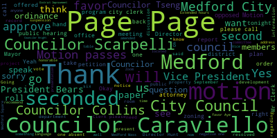
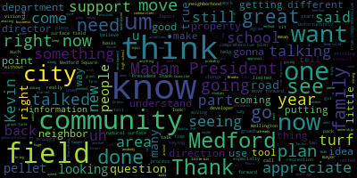
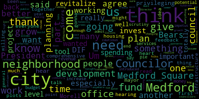

[Morell]: 18th regular meeting of the Medford City Council, September 19th, 2023 is called to order. Mr. Clerk, please call the roll. That's present present six present one absent. I don't see Councilor Knight. Oh, there is. All right, seven present zero absent meeting is called to order. Please rise. This is the plan. Announcements, accolades, remembrances, reports, and records. 23-409 offered by Councilor Scarpelli and Councilor Knight. Be it so resolved that the Medford City Council congratulate Ray and Maureen Brady on their recent celebration of their 70th wedding anniversary. Councilor Scarpelli.
[Scarpelli]: you. Thank you, Madam President. Thank you very much. We just wanted to send congratulations to one of methods. Greatest couples. You could still see them driving down Lawrence Road or Winthrop Street in their Cadillac going really slow. Mr. Mrs. Brady. Um, they're a great example for all of all of us as they're celebrating the 70th wedding anniversary. Uh, two amazing amazing people that have done so much for the city of Medford. Um, the Children all involved in Medford, um, whether it's coaching or, uh, um, giving back to their community. They've done an amazing job and great Medford people and just wanted to wish them a happy and 70 more years on their wedding anniversary.
[Morell]: Thank you. I can't see my screen now, but I assume Councilor Knight would like to speak on this as well. You can see him.
[Hurtubise]: He just kicked out.
[Morell]: Councilor Naye, would you like to speak on this resolution?
[Hurtubise]: I can't see what's happening.
[Caraviello]: I want to thank Councilor Scott Pate for putting this on. I've known Mr. Brady for many, many years. He's—at every election, him and I stand together side by side for the last 12 years that I've been running for office. I just want to congratulate them. They're a good family. Their sons are all coached and coached my kids, and they've done many things. So I just want to congratulate them. I just celebrated 47. Maybe someday I'll catch up to them.
[Scarpelli]: And he outlasts you at all the polling locations.
[Caraviello]: He does. He does. He's still in great shape, yeah.
[Morell]: Thank you, Councilor Perriello. Councilor Knight, one last, I know, I can't see. I don't have a connection either. So on the motion of Councilor Scarpelli is seconded by Councilor Carmielo. All those in favor? All those opposed? Motion passes. I can't see Councilor Knight, I can't. I don't think the, I think the internet's down. So 23-410 offered by Councilor Collins be resolved with the Medford City Council recognize the Jewish high holidays of Rosh Hashanah and Yom Kippur and wish a happy and healthy new year and an easy fast to all who observe. Councilor Collins.
[Collins]: Thank you, President Morell. Rosh Hashanah was this past weekend, as Jews who are celebrating are well aware, and Yom Kippur is coming up next weekend. So to everybody who is celebrating, I say Chag Sameach, and may the new year be a sweet one. Thank you.
[Morell]: Thank you. The motion of Councilor Caraviello, I'm sorry, the motion of Councilor Collins, seconded by Councilor Caraviello. All those in favor? Aye. All those opposed? Motion passes. Records, the records of the meeting of September 5th, 2023 were passed to Councilor Caraviello. Councilor Caraviello, how did you find them?
[Caraviello]: Madam President, I was able to review the records and I find them in order.
[Morell]: Thank you, Councilor Caraviello. On the motion of Councilor Caraviello, seconded by Councilor Tseng. All those in favor? All those opposed? Motion passes. Reports of committees, 23-389, September 5th, 2023. Committee of the whole report on the district improvement financing. Sorry, many minutes to follow. So this was a presentation we had two weeks ago about the proposed District Improvement Financing Plan. It appears on our agenda again tonight for a vote. We had a very thorough overview. Councilor, Vice President Bears.
[Bears]: Madam President, motion to join all three committee reports and approve if you want to tell us what they were.
[Morell]: Great. On the motion. Okay, so just going through the rest of it. Yeah, there's no internet right now. Okay, so, uh, 23-408 September 12 2023 committee the whole report on walking core redevelopment update this is an update from it for housing authority executive director Jeffrey Driscoll on just the what the project is gonna look like and any progress and meetings they've had in the past. And 22-321, September 13th, 2023, Zoning Planning and Development Subcommittee, Condo Conversion Ordinance Report to follow.
[Bears]: And yeah, we held a meeting picking back up the draft Condo Conversion Ordinance, Councilor Collins is leading on it, and we sent several motions out to city departments for additional information and updates on the decisions that we are going to have to make about what will be included.
[Morell]: Thank you, Vice President Bears. So on the motion of Vice President Bears to join and approve all reports of- Second, Madam President. Seconded by Councilor Caraviello. All those in favor? Aye. All those opposed? The motion passes.
[Bears]: Madam President.
[Morell]: Yes.
[Bears]: Motion to take paper 23-417 under suspension.
[Morell]: On the motion from Vice President Bears to take 23-417 under suspension. What page for everyone?
[Bears]: That is page 17. Okay.
[Morell]: So on the motion for vice president bears to take two three dash four one seven under suspension seconded by Councilor Tseng all those in favor. All those opposed motion passes. I'll read this, so 23-417, under communications from the mayor, to the honorable president and members of Medford City Council regarding DuPont versus City of Medford et al, dear President Morell and members of the City Council, I respectfully request and recommend your honorable body enter executive session pursuant to journal laws chapter 30A, section 21A3, to discuss strategy with respect to litigation concerning DuPont versus City of Medford et al, Middlesex Superior Court, Number 1981CV01886. I also recommend the council's agenda state in the executive session notice that votes may be taken. I'm enclosing an attorney-client privilege communication from Attorney Deborah Ecker of Keepey Law, outlining the notice and motion necessary to enter into executive session. Attorney Ecker will be present to provide the council with guidance on this matter. Thank you for your kind attention to this matter. Sincerely, Brenna Lungo-Koehn, Mayor.
[Bears]: I was going to move to go into executive session pursuant to general law chapter 30 a section 21 subsection a subsection 3 to discuss strategy relating to the pending litigation known as DuPont versus city of Medford at all. It's in Milosec Superior Court. docket number CA number 1981CB01886, because I declare that discussing the matter in open session may have detrimental effect on the litigating position of the council and the council will return to open session.
[Morell]: Thank you, Vice President Bears. Do I have a second on the motion? Seconded by Councilor Tseng. And we just need a roll call to enter into executive session. So Mr. Clerk, when you're ready, please call the roll.
[Hurtubise]: Vice President Bears?
[Bears]: Yes.
[Hurtubise]: Councilor Caraviello? Yes. Councilor Collins? Yes. Councilor Nanzan, does this all complete? Councilor Scarpelli? Yes. Councilor Tsengley? Yes. Councilor Morocco?
[Morell]: Yes. Six in the affirmative, zero in the negative, one absent. We will enter into executive session. So we're going to move from this room and go to a separate room with just the council and those on Zoom. We're going to go to a breakout room. We will return to this main room that you're in, so you can sit tight. And, Attorney Edward, we will take you with us into the breakout room. Return to open session. Oh, OK, great.
[Hurtubise]: It's. Oh, you can turn the audio off on your phone.
[Morell]: Or you can just go back to the Zoom. Great, thank you. Hearings, 23-375, legal notice. Medford City Clerk's Office, notice of a public hearing, Medford City Council. and public hearing will be held by the Medford City Council in the Howard F. Alden Memorial Auditorium, City Hall, 85 George P. Hassett Drive, Medford, Mass, on September 19th, 2023, at 7 p.m. A Zoom link to be posted no later than Friday, September 15th, 2023, on a petition from Matsuba Izakaya, Suji Bar and Grill, Incorporated, 38 Riverside Avenue, Medford, Mass, 02155, for a special permit to amend its hours of operation in accordance with Medford Zoning Ordinance Chapter 94-7.2.1 to operate Extended hours at its business at 38 Riverside Ave, Medford, MA 02155 said site being located in a commercial zoning district C1 as follows. Extended hours of operation requested 11 PM through 1 AM, Sunday through Saturday. petition and plan may be seen in the office of the city clerk, Medford City Hall, Medford Mask, 02155. Call 781-393-2425 for any accommodations, aides. The city of Medford is an EEOAA 504 employer. By order of the city council, Annamal Hurtubise, city clerk, advertise in the Medford Transcript and Somerville Journal, August 31st and September 7th, 2023. Do we have a petitioner for the extended hours? Hello, welcome. There should be like a button to, there you go. You just wanna tell us a little bit about what you're seeking. I'm sorry, and name and address for the record too.
[Zhao Hui Chen]: Okay, so my name is Chen. I'm from Matsuba, Sakai. So I'm here to extend for the extend hour from 11 p.m. to 1 a.m.
[Morell]: Okay, thank you. I'll turn over to Councilor Scarpelli, Chair of the Licensing Subcommittee.
[Scarpelli]: One question we had, what are the other restaurants doing in that area? And it's very similar. Ours are very similar for what this business is asking for. Everything is in place. We've had no complaints to date. So I wouldn't hold this off. I know that if we can, we usually do some sort of review. maybe a 30 and 60 day review to see if it's had any negative impacts to the community, the neighborhood, but I would move forward with this in favor of that, Madam President.
[Morell]: Any questions from the council? I'm sorry, this is a, sorry, this is a public hearing. So we have a motion to approve second by Councilor Collins as amended by, sorry, I know I'm gonna open it. have a motion to approve, seconded by Councilor Collins, which also amended by Councilor Scarpelli. As this is a public hearing, I will open the public hearing. Are there any members of the public who would like to speak in favor of the petition before us? And that would be you. You're in favor of this? I'm sorry? You're in favor of the, it's just procedural. You're in favor, yes. Thank you. Is there anyone else who would like to speak in favor of the paper before us for the extended hours? Seeing none, this portion of the public hearing is closed. Is there anyone who would like to speak in opposition of the paper before us? Seeing none, this portion of the public hearing is closed. So again, we have a motion from Councilor Scarpelli, seconded by Councilor Collins, and amended by Councilor Scarpelli with the 30 and 60 day review. Do you need a roll call or?
[Hurtubise]: Roll call.
[Morell]: We'll do a roll call. Yes.
[Hurtubise]: Councilor Knights? Councilor Scarpel? Yes. Councilor Stanton? President Roth?
[Morell]: Yes. Six in the affirmative, zero in the negative, one absent. The motion passes. Thank you.
[Scarpelli]: Thank you so much.
[Morell]: Congratulations. Good luck. 23-385. We will notice Medford City Clerk's Office. Notice of a public hearing. Medford City Council. The Medford City Council will hold a public hearing in the Howard F. Alden Chambers. and Medford City Hall, 85 George P. Hassett Drive, Medford and via Zoom on Tuesday, September 19th, 2023 at 7 p.m. A link to be posted no later than Friday, September 15th, 2023 on a petition from T.E. Pizza, LLC, Domino's 199 Mystic Ave, Medford, Mass for a special permit to amend its hours of operation in accordance with Medford zoning ordinance chapter 94-7.2.1 to operate extended hours at its business at 199 Mystic Ave, Medford, Mass said site being located in a commercial zoning district C2 as follows. Extended hours of operation requested 11 p.m. through 1 a.m. Sunday through Thursday, and 11 p.m. through 2 a.m. Friday through Saturday. Petition and plans may be seen in the office of the city clerk, room 103, Medford City Hall, I'm sorry, yes, Medford City Hall, Medford Mass. Call 781-393-2425 for any accommodation slash aids. The city of Medford is an EEOAA 504 employer by order of the city council. Signed Adam L. Hardaby, City Clerk. Advertised in the Medford Transcript and Somerville Journal, September 5th and September 12th, 2023. Welcome. Good evening. Name and address for the record, please.
[Christopher Baum]: My name is Christopher Baum, 77 Mammoth Road, Little Mass is my office.
[Morell]: Thank you.
[Christopher Baum]: If you just want to tell us a little bit about the paper before us. Sure, yeah. It's actually a transfer of ownership, so we needed to renew the extended hours that were previously there. Great. So we're just trying to carry the same operation hours.
[Morell]: Thank you. I'll hand it over to Councilor Scarpelli.
[Scarpelli]: Thank you, Madam President. Thank you for being here. I know that when the request came in for the new ownership, change of ownership, nothing changes. But unfortunately, at the time, that with new management, the prior permit went with the owner, so we requested for you to come in and you've done everything that's needed. I think we had one, as we went through the process, just one thing you should take note of. I know that we have there's we haven't had many complaints at that area we'll ask for another 30 60 day review with the new ownership but at the same time there was one question about some cleanliness around the area especially in the later hours when other businesses come in the next morning there were some things that that were left you just want to make sure that that area is maintained And there's some oversight there. Other than that, with the 30 and 60 day review, I would move approval. Everything is in order. And again, this has been an existing business for many, many years. And the hours of operations, it wouldn't be fair to change those now for what was established for many years in that location with the same business.
[Hurtubise]: So thank you.
[Morell]: Thank you, Councilor Palacio. So as this is a public hearing, I will open up for comments in favor and opposed. So is there anyone who would like to speak in favor of this paper? Yes, I would like to. Great, thank you. Is there anyone else who would like to speak in favor of this paper before us tonight? Seeing none, this portion of the public hearing is closed. Is there anyone who would like to speak in opposition of this paper? Seeing none, this portion of public hearing is closed. So on the motion of Councilor Scarpelli, seconded by Councilor Caraviello, amended by Councilor Scarpelli. Mr. Clerk, please call the roll when you are ready.
[Hurtubise]: Yes. Yes. Yes. Yes. Yes. Yes. Six in the affirmative, zero in the negative, one absent, the motion passes.
[Christopher Baum]: Thank you all. Have a great evening. Thank you, too.
[Bears]: Madam President, motion to suspend the rules to take paper 23-419.
[Morell]: On the motion of Vice President Bears to suspend the rules to take paper 23-419. Help me out. Page number? Page 18. Page 18. Page 18. Page 18. Page 18. Page 18. Page 18. Page 18. Page 18.
[Bears]: Page 18. Page 18. Page 18. Page 18.
[Morell]: Page 18. Page 18. Page 18. Page 18. Page 18. Page 18. Page 18. Page 18. Page 18. Page 18. Page 18. Page 18. Page 18. Page 18. Page 18. Page 18. Page 18. Page 18. Page 18. Page 18. Page 18. Page 18. Page 18. Page 18. Page 18. Page 18. Page 18. Page 18. Page 18. Page 18. Page 18. Page 18. Page 18. Page 18. Page 18. Page 18. Page 18. Page 18. Page 18. Page 18. Page 18. Page 18. Page 18 We have a second. Second by Councilor Tseng. All those in favor? Aye. All those opposed? Motion passes. 23-419. To Honorable President and members of the Medford City Council, regarding District Improvement Financing Program Order, dear President Morell and members of the City Council, I respectfully request I respectfully request and recommend your honorable body in accordance with MGL Chapter 40Q to adopt the enclosed order relating to the creation and implementation of a district improvement financing program for Medford Square. Alicia Hunt, Director of Planning, Development Sustainability, and Victoria Storrs, President and Founder of Storrs Associates, will be present at the meeting to answer any questions. Given City Council Rule 30, the draft ordinance was reviewed by KB Law, and they have approved it as to form. Thank you for your kind attention to this matter. Sincerely, Brenna Lungo-Koehn, Mayor. Order that the Medford City Council will hereby vote in accordance with the provisions of General Law Chapter 40Q2.1, approve, create, and implement a District Improvement Financing Plan, also known as a DIF, to encourage increased residential, industrial, and commercial activity within a development district to be designated and known as the Medford Square DIF Development District, a district pursuant to General Law's Chapter 40Q, as shown on the City of Medford Square. DIF Master Plan dated October 3rd, 2023, on file in the office of the city clerk and presented to the council, quote, the plan, which is incorporated by reference and in connection therewith approve and adopt a development program for the Medford square development district on file in the office of the city clerk for the improvement of the quality of life and physical facilities and infrastructure of such district and create a development program fund consistent with the requirements of general law chapter 40Q and two, Approve the Medford Square Diff Invested Revenue District, the IRD, pursuant to general law chapter 40Q, which is approximately 64.4 acres and coterminous with the development district and is comprised of parcels as shown on the map and as listed in attachment one of the above reference document. And in connection therewith, approve and adopt an invested revenue district development program for the Medford Square Diff Invested Revenue District. And three, set the percentage of the tax increment to be retained to finance the diff according to the plan. and four to make such designations and take any additional steps as may be necessary to authorize such diff or administer said program through the mayor and her designee which is the department of planning development and sustainability after signed authorization and five requests through the mayor that the city of medford assessing department establish and certify the original assessed value of the taxable property within the boundaries of the district, and on an annual basis, certify the amount by which the assessed value has increased or decreased from the original value, and six, to authorize the mayor to execute agreements and take such additional action as the mayor deems necessary or appropriate. So we did have a committee of the whole on this two weeks ago, and we do have Director Hunt on the call, as well as Victoria Storrs, and we also have Attorney Everett, I think for this one. I can't keep track. I believe for this one in case we have any questions as far as legal questions. So happy to turn it over if folks want a reminder presentation from Victoria Storrs or if folks have questions to start off. I will hand it over to you. I believe Victoria is on the call if she was. Recording in progress. Oh, she's right.
[Unidentified]: OK.
[Morell]: I will hand it off to you to just kind of give a summary of, again, what is before the council tonight.
[Stoers]: Good evening, council president and council members. Thank you for inviting me back for this first reading in front of city council. Two questions that I'd like to answer before opening up the floor for your continued questions and discussion. The first question, what is DIF? It's a tool to help pay for critical infrastructure and related projects, such as studies and plans that support it, infrastructure projects needed for new development to happen in the city. DIF lets you capture a portion of future tax revenues generated by the new development. And DIF also, as a tool, can make the city more competitive for state and federal grants because its adoption and use demonstrates a local commitment to getting the projects built and welcoming certain kinds of development. So that's the nature of the tool. Why is the city council being asked to adopt this tool in a portion of Medford Square? Because the infrastructure needs in Medford Square, particularly the neighborhood around where you're sitting this evening, around City Hall, the infrastructure needs are significant. And without the public investment, the kinds of projects the city wants can't afford to come. The sites aren't ready. For example, There is not currently enough water available to the priority site to support the kind of multifamily housing that the city has been discussing for those parcels in various plans for the past couple of years. So that's the what is DIF and the why is the city council being asked to adopt it now?
[Morell]: Thank you. Questions from the council or discussion? I have one question because I don't have questions. So as this is a simple ordinance, if that is something that future council decides they would no longer like to take part in, it's just reversing the process of which is changing the ordinance or removing the ordinance. There's no other additional hoops to jump through should the council decide they don't, a future council decide they don't want to take part.
[Stoers]: That is correct. You would undergo the ordinary ordinance process to repeal it, the only caveat is that if you have existing agreements, then those agreements would need to be over or unwound before you repeal to the deaf.
[Morell]: Thank you. Councilor Caraviello.
[Caraviello]: Thank you, Madam President, and thank you for your presentation last week and this week. And this is a question I probably should have asked last week. So I understand the process. So this is for the Medford Square area, correct?
[Stoers]: Yes.
[Caraviello]: So we have needs on Mystic Avenue. We have development needs throughout the whole city. Why are we just doing Method Square? I mean, are we going to look to diff every time a section of town needs work? Are we going to look to put a diff in, let's say, in Wellington or Riverside Avenue or Mystic Avenue? Is that a possibility, or this is just going to concentrate in Method Square, or are we looking to diff all the commercial areas that we're looking to develop going down the line?
[Stoers]: Councilor, I will answer factually and then Director Hunt will step in. Municipalities can use DIF in various portions of their communities. Each diff use would be driven by the current and expected needs of that district and would always go through this ordinance process. So choosing this one does not mean that you would necessarily use the tool again, nor does it mean that you would not. And I'll let Director Hunt take it from there.
[Alicia Hunt]: Sorry, good evening Councilors, I apologize for being remote, but you probably prefer that because I'm not feeling very well. So the reason we chose Medford Square first was actually our economic development director, Victor Schrader, identified this as a good tool as part of the project for developing the Medford Square parcels that was put to him as a priority project to move forward in the city. And so he identified this as something that would help with that project. And applied for the grant to pay for victorious time to help us with this one. That is essentially why we started here. Also, because this area, these are parcels that we own. And so we would like to get the best possible community benefits out of this. these projects at this location. Other parcels that the city's interested in redevelopment may look at a diff. They may look at other tools, but the city doesn't own those parcels. So there's also market forces at play there. Um, so hopefully that perhaps answers your question.
[Caraviello]: I was just skilled. So why can't we just put this into a throng whole community? because otherwise we're gonna have to go back again and hire consultants again and do it again at more cost to the city. Is that a correct statement or am I misaccepting?
[Alicia Hunt]: So Victoria, this time is paid for for the city through a grant through mass development to help us with this. Once we've done this once, there's a lot of it that we would need a lot less help to do it again because there was a lot of education and structure that we needed assistance with the first time around. We also, it would go in each individual area. Partially a diff is location specific to put the increased revenue from that area back into that area. So you wouldn't just do the whole city at once. You might identify a couple different parcels. But it also helps developers know that you are serious and investing in this specific location right now. The other, sorry, I am really a little slow this evening. The other thought with that is that the DIF does help the state. Realize that you're serious about this and they are more likely to award other economic development grants when you have focused on an area like this. For example, we're actually have been talking to mass development about extending this grant to provide consulting support for the RFP for this process for these parcels. And they basically have indicated that that is something that they're willing to do if we can take like as part of this process that this shows that we're really serious and so they would follow that up with additional grant support with additional technical assistance support on this project. So, that's why we also didn't want to take bite off more than we can chew at once. There's just so many projects that we can manage at one time. And this was 1 project that we could handle if we were trying to do this in 3 different locations. I'm not sure that we have the bandwidth to do that right now.
[Caraviello]: Thank you. But I would think that we want to show that we're serious in all the projects that we're doing. So just an opinion of my portion of my thoughts. Thank you.
[Morell]: Mr. Carpella.
[Scarpelli]: Thank you, Madam President. And thank you for this new initiative. But I revert back to what we've been talking about for four years now and the lack of a true comprehensive plan of what vision what our city's true vision is, and when we talk about development. We talk about all this, we see all this movement, like the spot development, whether it's looking at Mystic Ave, whether it's looking at the Apostle at Wellington and the air rights, whether it's looking at Medford Square, which we have, I think we already have hundreds of thousands of plans that are already written that we haven't looked at. I think what we're doing right now is we're allowing the city and really one department to make a decision what's greater for our community without the true input of what the community wants and the visions of what they see. We've been screaming this for years. It's funny that we're a few months away from an election and all of a sudden we're being talking about Method Square. truly, I can't support this for the fact that we've been asking for a true comprehensive plan of what we want to do as a community, what direction we want to go in. I know we've been talking to Director Hunt and her department about putting in teams to come in and go to neighborhood by neighborhood and giving some direction of what we see and what we think Medford needs. Because right now, we're a mess. We can't even drive into Medford Square without sitting in 45 minutes of traffic to get from one side of the city to the other. So until, I appreciate the input of the knowledge of acquiring what the DIF is, but I think truly until we have a true comprehensive plan of what we envision Medford to be, I don't think this council should approve any sort of ordinance that approves anything until we understand what one piece will do to the other piece of this community. We still haven't had these talks. We haven't had, have we sat down with the mayor? Has this committee sat down with the mayor and talked about a comprehensive plan of what direction we want the city of Medford to go in? We haven't. We haven't, we're a few months away from election. We wanna talk about redoing Medford Square, cause it looks good on a flyer. I just think that we need to slow down and do this the right way. And I say this again, I remember when this disgusting area, when I started working 15 years ago in a neighboring community that people used to laugh at, it was an armpit. And now it's one of the most popular, most exciting spots in Massachusetts to go to. and that's Assembly Road. And now that's turning from Assembly Road down to Lowell Broadway, into Union Square, around the Highland area. That's a plan that they had in that community with the neighborhoods. I would sit in community meetings and we would look at what impact we would have with fire, police, recreation, what happens with traffic studies, everything. We would sit together and we would create a plan. And that's how we grew that community. And that's why that community is so, so strong today. And why they have so much money they don't know what to do with. And then guess what? A neighbor commuting next to them said, hey, that's a great idea. Let's follow that same idea. They got a little help with the casino, but now you're seeing that grow, that area grow, and it's growing. We don't see that here. Because we don't have a plan. There isn't a plan. Or if there is, it's a secret. So again, I'm not gonna move on to any, I stopped voting on money papers years ago because we still don't have true numbers of what the budget, the budget that was voted for this past year. We were told by the finance director those numbers were not true, but we still voted it. I'm not going to vote on any money papers, and I'm sure not going to vote on any development issues right now until we sit with the mayor and understand what we have for a true comprehensive plan to see what direction Medford is going in. Do we want to be Somerville? Do we want to be Winchester? Do we want to be something in the middle? We don't know. Because right now, Councilor Caraviello has said it for years, we're the last piece of dirt. that developers can use now, closest to Boston. Everybody else is dried up. They can't touch it. So this is valuable. To jump into anything because we got a grant for it, that's not responsible. I don't think that's responsible. I think we need to see the biggest. Councilor Caraviello brings up a great point. Where does this ordinance, how does this play a factor in Wellington area? How does it play a factor on Mystic Ave? How does this play a factor in other areas in our community? And why wouldn't we use it? But this is a conversation that we're not talking about. We're talking about things in little bunches. Let's do this little bit. Let's do this little bit. And nothing is truly getting done. This is why we don't have a true increase in our new growth. We don't see any of that, like neighboring communities have. We don't have a true understanding with whatever growth we have, what it's going to do to our public servants and fire, police, DPW, and our school systems. These are things that should be talked about as you start this process in Medford Square. We haven't done that. I think we're putting the cot way ahead of this horse, saying, hey, let's get this done. without understanding the true direction that we're going in. So that's why I appreciate the presentation, but I couldn't support it. Thank you, Madam President.
[Alicia Hunt]: Thank you, Vice President Bears. Thank you, Madam President. Madam President, I have some information on the city of Somerville and their timeline and our comprehensive plan, if that's at all helpful.
[Morell]: Yeah, we'll go to Vice President Bears and we'll, I appreciate it, we'll come back to you.
[Bears]: Vice President Bears. I'll just be brief. I sat down with Victoria and Alicia prior to our last meeting on this and then, you know, ask some questions during our committee of the whole meeting. And then I had some further questions and Victoria was. I was lucky that Victoria was able to answer some of these questions, and I had them included in everybody's packets. You can see here, there's bullet points on just some additional information that I still had as outstanding questions. I think the point is well taken that there have been a lot of plans for Medford Square over the past 30 years. I think we all know that the condition of Medford Square is basically a car-prioritized throughway between 93 and 16, makes it dangerous for pedestrians, bicyclists, drivers, and makes it incredibly uninviting for commercial activity. It's not an inviting place to walk to. It's not an inviting place to walk around. And if you don't have that, you're not going to have the kind of development and the kind of environment that we want to see development. I think we can all agree that we've had many happy days when Clippership Drive or Riverside Ave is closed down and we can all walk around and have Oktoberfest or another event. In any case, to me, this doesn't create any new revenue. It doesn't create anything new. It is, to me, essentially saying, If we want new growth in Medford Square, we need to improve the infrastructure in Medford Square. One of the main ways that we're going to do that is by working on the city-owned parking lots, which we've been looking to develop in a multitude of ways for a long time across multiple mayors and across multiple Medford Square plans. And this is actually a way that we are going to prioritize setting aside the funding to actually make those investments. And I think that that's important investments in the water sewer infrastructure in the right away. Um, with all due respect on the on the planning side of things, you know, Councilor Caraviello and I and dozens and hundreds and I think a certain thousands of men for residents were involved in the comprehensive planning process, um, to create the city comprehensive plan. One of the major elements of the city comprehensive plan, which was finalized last year. is this kind of development in Medford Square. So, you know, having the questions answered about A, you know, if we find that the DIF is a tool that isn't working, we can dissolve it. If we find that funds that are put into the DIF, we need to prioritize for general funding so that the council can make those votes. It really, to me, is why not try? Why not implement a tool that might actually get us where many councils and many mayors have failed for many years in terms of actually investing in Medford Square. So if it doesn't work. it's been made very clear to me that we can dissolve the diff and we can, if we need, if we're looking at funds being tied up in our very tight and difficult budget seasons, we can move those funds back from the diff to the general fund. So I think it's good to have a tool in law that actually focuses on making, focuses the city on making Medford Square a vibrant, community hub that it has been in the past. It certainly was before the construction of the highway and hopefully we can make it again. Thank you.
[Morell]: Thank you. Councilor Collins.
[Collins]: Thank you, President Morell, and thank you, Director Hunt and Ms. Storrs for being here again and for all of the context leading up to this vote. I appreciate the discussion around this, this week, last week as well. You know, as we discussed in our Committee of the Whole on this topic last week, you know, coming into this topic, my big concern was essentially, you know, What we don't want, I think what we know that nobody wants is to privilege any one part of the city over another. That's not what we're here to do. Nobody wants that. Even the folks who, you know, talking about Medford Square and how it's in desperate need of revitalization is the first thing out of their mouths. I think everybody's very aware that all across the city, we're in dire need of reversing chronic underfunding of infrastructure and resident quality of life and roads and sidewalks and infrastructure. We can go on and on. So, getting confirmation on, you know, what the diff is and is not was the first thing that I wanted to talk about in our committee of the whole last week. And, you know, what has led me to, you know, want to enthusiastically approve this plan and then get to, you know, see it run out over the course of several years and, you know, kind of get the experiential evidence of how it's working. It's clear to me, or at least it's clear that everything that we know about this tool tells us that we know that this is not going to take anything away from the general fund. We have a reason to believe that the infrastructure improvements this will allow us to make on the city-owned parcels in Medford Square may very well increase the size of the pie for the general fund. And that's important to me because I care a lot about revitalization of Medford Square. I would love for it if it was easier to bike down here and just enjoy the riverfront and not have it be a place that I have to figure out how to get to safely or meet friends at. I think a lot of people feel the same way. I think that that's a thing that a lot of people share, you know, we see that and the comprehensive plan that was passed last year and I hear that whenever I just amount in the community talking to people. And I think that that's I think that that's very much a community value and then the other part of it. is the possibility for this really to be that flywheel effect that will become a feeder source for the rest of the general fund. If we can see this as a unique opportunity to have this grant and develop this uniquely city-owned parcels right in the back of this building that are empty parking lots right now and have been for a long time, that's what's important to me. If that then turns into increased capacity for you know, I think that's a win win. You know, starting to refund the rest of the city. Um you know where there's. Where we see the evidence of chronic underfunding day in and day out. Um. I think that can be a win win. And you know, hearing that analysis, um, from Director Hunt and the consultants on this, um, you know, I think I'll echo what Vice President Bear says. It's let me just And it seems that at the very least, it's not going to be taking capacity away from the rest of the city. It may well increase it over time.
[Morell]: Thank you.
[Tseng]: Thank you, President Morell. I hear my fellow councilors points, and I think honestly, I agree with most everything that's been said tonight. I totally agree that we need development in other parts of the city as well. I agree that we can't be privileging one part of the city above another, and that we need comprehensive plans to tie the whole city together. I also want to acknowledge that we do have a comprehensive plan in the city that many, many, and by many, I mean hundreds, if not thousands of people gave feedback on. We've had time to review those plans, to give feedback as councillors, as members of the public. I also have had time to read those plans, to read the different press releases that I've come from the mayor's office and from the planning office about these plots, these lots and what we're gonna do with them. And I've had that time to talk to Director Hunt, to talk to Victoria Storrs about what the city is envisioning for these plots. And I think Councilor Bears more or less has said it, but, what we're hearing from the business community, from folks who would want to come to Medford, what we're hearing from people who work in housing and from people who work in planning and development is that Medford Square needs a jolt. And we need more housing to grow our consumer base. We need better traffic patterns. We need better infrastructure, and especially when it comes to water and sewer, which the DIF allows for that investment. And we can't just assume that private developers will come to Medford Square and be willing to invest that much in changing Medford for their own ends. That's not something we've seen anywhere else. It's just not cost effective for them. When it comes to the, you know, the idea that we might be privileging one part of the city I think I took this very to heart, especially since, you know, so much of my first campaign running for this was for city council is about making sure that you know we build a city that's working for everyone across our neighborhoods. And when I think about it, I think one important thing to realize is the potential for us to increase the pie, increase the coffers when it comes to our city revenue. And as Councilor Collins has referred to, I don't think it's lost on anyone that certain neighborhoods have especially strong high needs for better streets, for more social services, for more trees. The big question is where that money is going to come from. And this tool gives us the potential to grow that pie, to grow revenue, to create that new growth that we all keep talking about, to invest in those services and to invest in that infrastructure. It's also, I think, a reinvestment in a central neighborhood in the city that really binds all of Medford together. To get from any part of Medford to another, this is one of the neighborhoods that you're more likely to pass by. If I'm going from South Medford to North Medford, if I'm going from Wellington to West Medford, this is the heart of our city. to reinvest, to revitalize this neighborhood, I think is a strategic choice to revitalize something that I think we can all benefit from no matter what neighborhood we live in. I think another plus I see to the DIF is this idea of democratizing development and to give the budget. Um, I think it's going to give us as a city council more say, um and more scrutiny when it comes to how the city and the mayor spending the budget. Um you know any I think an important fact to state is that any spending from the deaths, um, from the funds has to be appropriated each year by the city We don't necessarily have that level of scrutiny, but by adopting the DIFs, that would give us that ability to have that level of transparency, to have that level of democracy, to have those discussions about how we're spending our money. Each year, we can also have a recommendation. to sweep the unused funds from the debt funds, the unspent funds, back into the general fund, which I think should allay some of our fears as well. At the end of the day, I think it's important to to reiterate Councilor Baer's point that this is an experiment. This is us trying to provide that impetus, that stimulus to revitalize Medford Square, the thing that we haven't seen so far in Medford Square. And I think we can disagree as to where that impetus is gonna come from. I think that's totally fair. This is a tool that I'm willing to try. And if it doesn't work, I think we can all be mature enough to admit our faults and to admit that it's not working. And as Ms. Storrs said, it's easy to reverse this decision. But I also have optimism that this tool is something that can help our city grow.
[Morell]: Thank you, Professor Segg. Councilor Caraviello.
[Caraviello]: Thank you, Madam President. So you know, in all due respect to my other Councilors, if you look at the chat that that was presented to us, our return on investment is minimal over the next 10 years. I mean, I think I think we're looking to realize I think on the on the first project, maybe eight or $9,000. And the city of decides that's money goes nowhere on an infrastructure project. That's the part that I would think, you know, that We're using the same plan that we use over and over and over again. There's 100 plans in the city's office there, and they're all pretty much the same. Not one of them ever talks about the water. We have a city with a waterfront, and we ignore it. We let cars go through it and pass through our business community, okay? Other cities die for waterfronts and waterfront property. That is not even talked about in any of the plans for the city of Medford, of Medford Square. And to get a minimal return on the investment, I mean, just look at the chat that was provided to us. It's not a lot of money that we're going to be getting back. We could probably get more money in linkage fees from developers than we're going to get on the diff. So I mean, again, I understand the tool. It's not a giant moneymaker, and for the amount of money it's going to bring in over the next 10 years, it isn't going to get much infrastructure done. That's part of the problem with this. And there's nothing opposed to it, but there's no return on investment on it. And you have other parts of the city that need infrastructure projects, too. The whole city needs infrastructure, not just Medford Square. We have no real plan, and Councilor Behr said it, and I've said it right along. Bedford Square is not inviting to anybody. This summer, I was in Noro Center with my wife. We went out to dinner. I stopped in the middle of the street, and I said to my wife, I said, I want you to stop and tell me what you see here. She didn't understand. I said, stop and tell me what you see. I says, we're looking at tree-lined streets, which look inviting, lit up all over the area. It's an inviting looking city. Look at our square. It's bare. It's barren. You've got a waterfront. Start using the assets we have instead of chasing around. This is where it is. And I'm gonna motion to table this until we have a plan.
[Morell]: So we have a motion to table, seconded by Councilor Scarpelli. Motion to table is undebatable. Mr. Clerk, would you please call the roll? And this is a motion to table.
[Hurtubise]: Councilor Caraviello? Yes. Councilor Kellos?
[Collins]: No.
[Hurtubise]: That's fantastic. Councilor Scarpelli? Yes. Councilor Tseng? No.
[Morell]: Councilor Morocco? No. Two in the affirmative, four in the negative, the motion fails. Discussion from councilors. Vice Mayor Bears.
[Bears]: I understand and respect the frustration. I think this is a step in the direction that we're talking about here. Part of the master plan document for the DIF talks about land consolidation, new roads, new rights of way, you know, we could be talking that. And if you look at the project, I said, you know, this is an outline of looking at money over 30 years. I agree that short term money that's in the chart is not much, but the medium term, the 10 year money, the 30 year money, talking about 10 million, maybe as high as 50 million, right? Like that's a serious money, especially if you're talking about using it over a period to pay for bond costs. You know, we talk about new rights of way, we could be, we could move clippership drive, right? We can move clippership drive. You can move. You can move. George has to drive. You could adjust city hall mall. You could build a new right of way here and increase access to the waterfront. Exactly what you're saying. This doesn't do that in a week. I completely agree. It doesn't do it in a year or two years. And it doesn't do it along the timeline that I would prefer. Right. I would like to have something in place sooner than 10 years or 30 years. Right. But this is a starting point. And that's really all I'm saying here. If it doesn't work and if we don't see it. We have the authority to repeal it. We have the authority to sweep the funds back. We have the authority to take a different approach. So I see this as giving the Council more power over the exact questions that we're all concerned about here.
[Morell]: Thank you. Councilor Scarpelli, then Councilor Collins.
[Scarpelli]: Thank you, Madam President. Again, this is a lively debate that I think it's interesting and it's informative. But again, it brings us back to the original question. this would be a great opportunity to use a great tool in our toolbox if we knew what the plan is. I love the idea that we want to work on Medford Square right now and use this tool, but understand something, without a true plan about moving one street and moving another street, how that affects the plan just right down the road on Mystic Ave or just down the road on Riverside Ave. or just down the road in West Medford Square, or just down the road in Salem Street. So there are so many, if you look at what we're talking about here, it's a great idea. It's a great tool in the toolbox. The only problem is we don't have a toolbox yet. No one has anyone talked to anybody here because I haven't talked to anybody. I haven't sat with the team and said, this is our vision. This is a true comprehensive plan that the community is involved to sit down and deliberate and share their thoughts and where method's gonna go. The mayor is putting thousands of committees and boards together. and these little bits and pieces like getting bit in the ankle over and over again. It sounds great, okay? And it's a start, but start for what? What is it a start of? Because when you start something, there's a vision, there's a finale. When you have a starting point, your destination, your journey takes you somewhere. With this starting point, we don't know where it's going, everyone. That's all I'm saying. I all agree, we all agree. This is a good tool if you had the opportunity to understand what we're looking at in totality. We don't have that. And I think it's just narrow minded that we're not thinking of the big picture. We're moving and changing things for the sake that you don't know. We keep talking about underserved communities and underserved parts of our community. We don't know the impact. By changing this ordinance, you don't know the impact that's gonna have. You don't know the impact that it's gonna have. And has this plan talked about what happens with our infrastructure? Have we talked about what's surrounded it? Have we talked about the fire, police, teachers, the school department? I got a text this morning. Schools are adding more kindergarten classes. Classes are getting filled. and just keep adding it with no direction. So again, this is a good idea. I agree with my colleagues. I think it's a good idea. If you had a plan that we can say, this is great. This is the plan in Medford Square. This is how it's gonna roll into probably one of the biggest opportunities we have, and that's Mystic Ave, especially along the highway side. You have so many opportunities, but we don't know. Right now, it's just people talking. It's people talking and no one's, but there's no one leading us and saying, this is what we should do. Let's, we talked about it. This council has talked with the development director and we've talked about putting in, you know, getting a zoning consultant in place. We've talked about getting a team in so we could sit down to see what zoning we want from Medford, what growth we want from Medford, what direction we want from Medford. But if we keep changing these little pieces, I use the parcel land we voted for in Wellington. We still have the air rights. Everybody keeps talking about the air rights with the T. Well, I found out the other day that the T wants that land. The T's, and who's gonna get it first? The T of the city of Medford. Who do you think's gonna get that first? These are the things I'm saying until we have focus on this in the back door, the T is coming in to negotiate what they want at Wellington station, where that could be a huge gateway to our community, what we want to do. So again, I appreciate everyone's input. This is a, it's a, it's, it's, it's a respectful debate. I think it's, it's bring some make some great points. All I'm saying is I agree with you. That is a good tool, but I don't agree that we don't have a plan to use this tool. One part of the community that's small minded, that's narrow thinking. We need to understand what we're looking at the city. So thank you.
[Collins]: Thank you, President Morell, and I want to echo Councilor Scarpelli. I really do appreciate the debate about this. I think that between last week and this week, I think that, you know, especially for residents of this community, it's important that we look at this from different perspectives and that we share that openly. And I think that I've made my stance and my opinion on it pretty clear, so I don't want to go on at length. or beat a tired horse. But the other point that I do want to make that I forgot to make before was one thing that I found really compelling from our committee of the whole last week is that defunds should the city council decide to appropriate them and approve an appropriation to this effect would in fact, one thing it could be used for is improving our capacity for Developing plans for Medford square for implementing plans from the comprehensive plan from the deaf master plan. Um, I mean, to me, that's just 1 part of looking at this as a tool that increases capacity that doesn't subtract capacity from anything else. It increases our capacity for getting grants. It increases our capacity for. taking our existing plans, comprehensive plan, et cetera, and making them more concrete and actionable as we're attracting development and investment in our infrastructure. But with that, I think I've said a lot about my stance on this. I would motion to approve for first reading after further discussion with my fellow councilors.
[Morell]: Sorry, I was gonna move for approval of first reading. Thank you, Councilor Collins. Councilor Caraviello.
[Caraviello]: Thank you, Madam President. You know, just on the last thing here, you know, we keep talking about development. We don't have a development director. We have a part-time person. We had a full-time development director, and he was doing a great job. And now he's gone. He's working in the private sector. He's giving us 10 hours a month or 10 hours a week. He's not a development director. I mean, I love Victor, and I wish he was here full time. But him working a full-time job and us calling, you know, him being on a phone call job, that's not the economic developer I want. I want a full-time person there. That's why we can't get out of our own way.
[Morell]: Thank you. President Ferris.
[Bears]: Thank you, Madam President. I think there's two things here, right? I'm not going to speak to who's leading on what, more than to say that I think this council is leading on development and planning and doing so directly in consultation with the office of development and planning development and sustainability. I think there's a couple of things. I think Wellington, to be honest, I think so far the Medford Square, the Wellington air rights, the Medford Square parcels, I think a little more coordination with the council on before RFIs go out and before that would be very welcome. I think on the flip side, you know, I wrote 12 pages of commentary that I forced a lot of people to read about the comprehensive plan that we spent two years working on. We have a tool in front of us. We don't have the whole toolbox yet, but I just don't agree that we don't have a blueprint. It's very clear from the two year process to develop the citywide comprehensive plan that is incredibly detailed. that there is a vision for where the city is going that includes the Mystic Ave corridor, that includes Medford Square. I mean, it's all about squares and corridors and about our neighborhoods. What we're talking about doing next is taking that vision and that blueprint and putting it into action through updating our zoning code. Another way that we can put that into action is this tool in front of us by creating a specific of money to support the things that are in the master plan for improving the infrastructure in Medford Square, but there's a blueprint that comprehensive plan is an incredibly detailed document that talks about where we want the city to go, what we want our corridors to look like what we want our squares to look like, and this is very much in line with that I spent a lot of time. in meetings around the comprehensive plan that included people who had a variety of different ideological and political backgrounds, different viewpoints on what development should look like. And I think we reached a good blueprint that moves us in the direction of significant growth. in a measured and reasonable way. And I think that's what we're talking about using tools to do. So I won't dispute, I've extended the metaphor, right? Tool, toolbox, now I've added blueprint. I won't dispute that the toolbox is not complete, but I think this tool serves the blueprint and that's why I support it. I think the real place where the rubber is gonna meet the road here, quite literally, is the zoning work that we need to do over the next two years. And I'm really looking forward to doing that because that's where we're going to take this larger comprehensive plan, the discussions of what should happen in squares and corridors. And we're gonna say, here's what the zoning map is now gonna look like in these areas. Here's what the building massing should look like in these areas. Here's what uses should be allowed and not allowed in these areas. Here's what additional density looks like that's going to be a discussion, but I think there's a significant road map there, and that's why I feel comfortable going ahead at this time. I'll second Councilor Collins's motion.
[Morell]: Thank you. Any further discussion from the council this time? I will just be brief. I know pretty much everything has been said. Like Councilor Collins, Councilor Scarpelli said, I appreciate the debate. I think there's a lot of really good points being made. And I think what I go back to is that this is, as Vice Mayor Behr said, this is a tool, it's a signal, it's a funding source. It doesn't change any of those plans for better or worse, however people feel about it. It gives the council some more power in directing funding sources and establishing the ordinance and requiring folks to come back to us to actually use money that will be gained from this change. So I think it's something that there are things I think we'd all like to see, but I think it's a step in the right direction. And I think hopefully it will drive investment. And it is something that it can be changed, just not written in stone. So I think it's something that's worth moving forward with at this time. And I will go to Mr. Castagnetti on Zoom. Any other members of the public who wish to speak, please raise your hand or come up to the podium. Mr. Castagnetti, name and address for the record, please.
[Castagnetti]: Andrew Castagnetti, Cushman Street Method Mass. Thank you, Council President. If I may, I'd like to offer some historical information, according to me. I recollect Route 93 was built in 1960. And I don't think it affected the square in any way, except for the eminent domain. More importantly, in 1968, I graduated the old high school on Forest Street. And two years later, my wife closed the school, 1970. And they built a so-called new high school. in West Medford in the woods, and in my opinion, it was a terrible political mistake because Medford Square, with our three grades, 10th, 11th, and 12th, the baby boomers, 800 per class, about 2,500 students, and we're lucky if we had $2 in our pockets. However, we supported Method Cinema, Papa Gino's Joe's pool room, small ball bowling, where have advanced and God is the pewter pot. And I know there was Woolworths and grants, but that's a day of a different age. However, the square was vibrant. There was a lot of action, including Joe's pool room below old Markey's office. So that was a major mistake for the business of Medford Square, in my opinion. Also, I like to say, Councilor Caraviello was 100% right. I've been saying this for over 30 years at your meetings, that basically we turned our back on the river. Big mistake. I've been to Georgetown, Virginia, used to be a ghetto until the Kennedy's moved in there, and now it's high-end place. I they have all these beautiful pubs like bestsellers used to have, but their back have these beautiful porches on top of the river. And all these beautiful lights. I mean, we should have not turned our backs on the river. And furthermore, we built over 500 clipper ships in the city over 500. And over 300 of those ships were longer than the football stadium. Hormel Stadium, they're over 300 feet long. And we don't have one lousy clipper ship or a miniature version on clipper ship drive, whether it's in the water or on the shoreline. And to attract 50 people per busload coming in from Faneuil Hall is tourism. I think that should get done. Although Medford is a one horse town, It's, it's, they think that they're a bedroom community. And you're not going to make Harvard Square here, or Davis Square here. But furthermore, why not bring the the underground subway from Station Landon and have it emerge on one of these parcels of lands next to the river, then you'd have the eternal stimulus, in my opinion. However, also, instead of this diff thing, how about have you done any requests for proposals from all these big developers to see what they think they would like to do? And don't forget, we do own that land, the people, we the people own that land. So that's all I have to say at this point.
[Morell]: Any other members of the public wish to speak? Any further discussion from the council? I have a motion from Councilor Collins to approve for first reading seconded by Vice President Bears. Mr. Clerk, please call the roll. Oh, sorry, I do see Pat. Oops, go to, oh wait. There we go, okay.
[Hurtubise]: Vice President Bears. Yes. Councilor Caraviello. Yes. Councilor Collins. Yes. Councilor Mattox. Yes. Councilor Scarpello. No. Councilor Tseng? Yes. President Morocco?
[Morell]: Yes. Five in the affirmative, one in the negative, one absent. The motion passes for first reading. Back to our regular. of Business, as that was a suspension just for a specific paper. Petitions, presentations, and similar papers, 23-411, to City Council President Nicole Merlin, honorable members of the City Council, from Office of Planning, Development, and Sustainability, regarding proposed planned development district reordinance amendment 13-20, Walkling Court, Medford 02155, parcel map number N-05-10. Per the procedures outlined in section 94-9.2 PDD of the Medford Zoning Ordinance, the applicant, Medford Housing Authority, submitted a proposed amendment PDD for the site located at 1 and 3 through 20 Waltham Court, Medford Mass 02155, assessor's map and 05-10 as shown on locus map PDD3. The property is located in apartment one zoning district. The applicant proposes zoning to align with a prospective project which would include 144 replacement affordable units and 54 new units of affordable residential units for senior and disabled household and 40 new affordable residential units for families. President Rowe. Councilor Collins.
[Collins]: Motion to waive the remainder of the reading for a brief summary.
[Morell]: On the motion of Councilor Collins to waive the remainder of the reading for a brief summary from Director Hunt, seconded by Councilor Caraviello. All those in favor? Aye. All those opposed? Motion passes. Going to Director Hunt.
[Alicia Hunt]: Good evening Madam President again. So this is a planned development district. This was something that was part of the new recodification of the zoning that the city council undertook to allow specific changes specifically needed for an areas of the city to accommodate a particular project. This one is from the Medford Housing Authority. They are present this evening. I believe that you are all very familiar with this project. This step is actually the zoning step where the City Council must, under state law, refer this zoning request to the Community Development Board for a public hearing. and then an opinion back to this board. At that time, the City Council would hold a public hearing, which would be the appropriate time to take public comments on it during the legally required public hearing on this project. Once you also have the recommendation of the Community Development Board, in hand. So while you are welcome to ask questions and discuss this under state law, the City Council has to refer this to the City, to the Community Development Board this evening. Would you like other information? I'd hesitate to personally off the cuff summarize the project, but we do have MHA staff here tonight who could give you a summary if that was helpful.
[Morell]: I think we're good, I do see Councilor Collins, and I see Gabe Ciccariello on the call as well, if we have questions. Councilor Collins?
[Collins]: Thank you, President Monroe. I wouldn't wanna preclude any discussion at this point, but since this is just a procedural step, I would motion to refer the zoning amendment to the Community Development Board, pending further discussion, questions, summarization.
[Morell]: We have a motion from Councilor Collins to refer it to the Community Development Board, seconded by Councilor Caraviello.
[Bears]: I was just going to say that we did just have a presentation, extensive presentation on the project just last week. And if any residents are interested in the level of detail that we went into, those recordings are available from Medford Community Media, medfordtv.org.
[Morell]: Thank you. So on the motion of Councilor Collins to refer to the CD board, seconded by Councilor Caraviello, Mr. Clerk, please call the roll. Right away, Councilor Tseng, probably. way to be for Councilor Tseng I would like to briefly speak. Sorry.
[Bears]: We have the votes. Please call the roll. Yes. Yes. Yes. Yes. Yes. Yes. Yes. Yes.
[Morell]: Yes, 5 in the affirmative, 0 in the negative, 2 absent. The motion passes. The paper is referred to the Community Development Board. 23-412, Adam Dasch and Associates, attorneys at law. Two, city clerk's office, city of Medford, attention, Adam Hurtubise, city clerk regarding 12 Dell Avenue petition to amend deed restriction. Petitioners and owners, Gerald L. Alves and Janet R. Alves, dear Mr. Hurtubise, I represent Gerald L. Alves and Janet R. Alves, who are the petitioners and are the owners of the property known as 12 Dell Avenue in Medford per a deed dated November 25th, 2013, and are recorded in the Middlesex South District Registry of Deeds in book 62994 page 140, a copy of which is enclosed with the petition as Exhibit A, the property. The property in Medford Assessor's Parcel I-13 slash 50 is located in General Residence GR Zoning District and contains a single family house in which the petitioners reside.
[Caraviello]: Madam President, motion to waive the reading and have the attorney give an explanation.
[Morell]: Thank you. On the motion of Councilor Caraviello to waive the reading and have the attorney give us an explanation paper before us, seconded by
[Hurtubise]: Second.
[Morell]: Councilor Tseng, all those in favor? Aye. All those opposed? Motion passes. I'll hand it over to you. Name and address for the record, if you could just tell us a little bit more about what's before us tonight.
[Dash]: Absolutely. Thank you. Adam Dash, 48 Grove Street in Somerville. Thank you, Madam President, evening councilors. I'm here with Janet and Gerald Alves, who are the owners and the petitioners regarding 12 Dell Avenue. Also with us are Douglas Shoup, architect on the project, and William Lucas of Boulder Engineering, who's the senior project engineer, should there be any questions. So the Albs have filed a petition to amend a deed restriction regarding their property at 12 Dell Avenue, and the restriction is held by the city of Medford. It's an unusual situation for sure. The property is very large. It's about 48,082 square foot lot, of which there's only a single family house on it. And that is the house that's occupied by the Albs' family. The city held deed restriction is from the city's 2008 sale of this property. And this allows only a single-family house to be built on the large property, prevents the property from being subdivided, and requires the single-family house to meet certain design requirements that were in the RFP when the city sold the property in 2008. I want to note the Alves were not the people who bought the property from the city, and they were not the developers who built the house. They are the current owners of the property who purchased it in 2013. The Albs are not asking to remove this restriction entirely. They're only asking it to be amended to allow them. to have that large property subdivided into two lots, which are still substantial. One will have the single family house still on it, and the other they would like to put three units on. And that's all that would happen to it. On the new vacant lot, to remove that mandate, also that the design requirements to the RFP from 2008 go away, because obviously those dealt with only a single family house, and they're completely irrelevant in this context. So the restriction would remain in place in all of the respects which would prevent any other development of this parcel. The reason for the Alves' request is that they're over 65 years of age, they have a disabled son, and Mr. Alves has a widowed sister. Janet Alves retired early as a registered nurse to care for her disabled adult son, who's now doing better and actually has a part-time service job. Still, he needs supervision and support. So by building a three-family, On that vacant lot, their son could live in one of the units. Mr. Alves' widowed sister could live in one of the units. The Alves could downsize from their large single-family house that's now too big for them into the third unit, and then they could sell the single-family house. That's all that's trying to be done here. The family can stay together in this way, and the Alves could look after their son, and the son could also live. If he needed a caregiver, could move in. The son also could have a quasi-independent situation. So the idea here is that amending the restriction not only helps the Owls family, it also helps the city by adding much-needed housing units, by providing building permit fees, by increasing the tax base, and by allowing a longtime Medford family to remain. My clients had architectural survey and engineering work done to ensure that dividing these two lots would allow this project to happen. We have been able to show that that can be done. We have filed with my application exhibits D and E would show sort of schematics of that. We haven't gone and developed entire buildings because obviously it's a chicken and egg problem, whereas if the council will not amend the restriction, then there's no sense in going any further. But we've done the diligence to know that this is the next step that we need to be at. We've also spoken with various city departments and received comments and incorporated those comments into our thinking here, such as making sure the fire truck can get up Dell Avenue and turn around and access this, which you can. We filed a plan that shows that. So in short, this is really actually a pretty simple request to understand. Of course, if the council agrees to amend the restriction, The owls would still have to go through a whole process to actually do something to build the three family and meet all relevant codes and such, as well as dealing with ledge that's on the site. However, without the deed restriction being amended, they can't even go to that next step. And allowing this amendment does not mean that you're allowing zoning relief or allowing a project or anything like that. You're just allowing them to begin that process. So since the petition was filed, I know the council has amended the zoning ordinance to allow greater than one principal structure on the lot. However, we're still seeking to do the subdivision so that single-family house is not legally tied to the three-family. Otherwise, it would be kind of an awkward two-building condo situation. So I took the liberty of drafting an amendment document for recording at the Registry of Deeds and attached it to the petition as Exhibit C, should you be so inclined, just to approve the petition tonight or at some other point. Therefore, the Alves hope that you would help the city and their family and themselves by amending this restriction on the property at 12 Dell Avenue. We're here to answer any questions. Thank you.
[Morell]: Thank you. President Ferris.
[Bears]: Thank you, Madam President. I'm interested in hearing from, um, the planning department and any other city folks online and our council. But I just have two quick questions. A Councilor dash. Um, one. the letter notes that you've received comments from offices. Have you received written comments from offices?
[Dash]: No, we've had, I'm sorry, Adam Dasch again. We've had meetings via Zoom. We've spoken with the mayor's office, the community development folks, and we're planning now the fire department. We've had meetings. email plans back and forth. They've asked us, they can't really give us written responses if we don't actually file a formal application, which is typically how things go. And we're not at that step because again, if this amendment doesn't get, if this restriction doesn't get amended, we can't do anything else.
[Bears]: Thank you. And then would all of you potentially be, you know, one of the questions here is the city sold land to the previous owner you know, from what my review was pretty, I think it was about $80,000 for the lot, kind of under, because of the restrictions, understanding that, you know, if that lot were fully developed, well, I know it's difficult land. I live on Fellsbury West up the street. I know it's not, you know, flat land, 48,000 square feet or anything like that, but conceivably, especially given the value of, land and housing today, someone could figure out a way to put quite a few number of units on that lot. I know that's not what you're asking for here, but it could be conceivable down the road. The restrictions were put on by the city in 2008 with that owner on the condition that there be one unit on a lot, one single family home. Would there be a consideration to making the three units deed restricted permanently affordable potentially?
[Dash]: And actually, while the idea, as I explained, for the family in there and the folks, I'm not sure that they necessarily would qualify for that. This might defeat the purpose. Certainly, as I said, we're not looking to remove the restriction. We're just seeking to amend it to just allow this one thing and nothing else. So obviously, 48,000 square feet, if one could deal with the ledge. One could build a lot of units, and we understand that. We're not proposing that at all. The city would still, you would still withhold that restriction in place. The restriction will exist. How it happened in 2008 with the one unit, it was a ledge lot. I would imagine the construction was quite costly. I don't know what happened back then. I actually looked through the city records to find out what happened in 2008. I could not get an answer as to why this happened. and why the restriction was put on in this manner. However, it's there, and it is, and I guess at some point the why doesn't matter anymore, because it's been such a long time. However, the Alves are in a bit of a situation here where they have this very massive lot with this one house on it, and it's a little too big for them. And they'd like to stay in the neighborhood. So this is a way to stay in the neighborhood and deal with their internal family issues without overburdening the city, but still having a few extra units, which help in the long run with the city providing more housing in a way that we feel is manageable and not overly intrusive on the neighborhood there are three units around. So it's not as though this would be some anomaly in the district.
[Bears]: Yeah, I'm not a lawyer. And I think on balance, the story and the explanation of why this would this request is coming before us certainly makes sense. I guess just more my question is, and you know, feel free to just keep it as a bug in your ear. And I'm sure there'll be a lot of other conversations with city departments and officials, but I hear what you're saying, maybe they don't qualify for the affordability restriction now. If it were possible to make it conditional that if the property were ever to be sold in the future, I don't know if it's possible to say that, put that condition on, that if there was a future sale that the units would be affordable after that point, something like that. I think that would be... hopefully a little more in line with the initial restriction while still fulfilling the purpose that the family would like to see. So just want to put that in as an idea. But other than that, I'll leave it as is and wait to hear from other councillors and from city staff.
[Morell]: Thank you. And I do want to note that we have Attorney Everett from KP Law on the call as well.
[Scarpelli]: Yes, sir. Again, I was appreciate you mentioning that be nice that two years ago, we used to have a city solicitor that we can have here and help us as we go through this process. I had no idea that KP law would be here to help us along. But we're talking about a very Um, different situation. Um, and I think that all we're asking for right now is just the opportunity to go to the next step. And you know, the questions that people have in neighborhoods is, you know, as valiant as your, your, your, your heart and what you need is something that I would support in a second. I don't see that. Um, this is something you took a chance on that land, but as your family grew, to be a strong member of our community. You know, we've had a lot of obstacles and hurdles come in the way and you still want to be a strong member of our community with your family, and, um. I think we should support this this evening and move it along. I know that they'll be hurdles along the way. They'll be neighbors that are going to be mad about breaking ledge. They'll be neighbors questioning parking, and there's going to be questions about affordable If that's the question that we're just trying to move something down the road so we can maybe help a family that's in need right now, I think that we'd be. We'd be speaking for myself. I would be foolish not to support a family that is looking for that support in Medford. Again, we're not giving approval to build the Taj Mahal all we're looking for. Council is asking for the family that we help them move on to the next step and then we go from there. I think it's a no brainer. So I would move, um, if there is a motion that we need that I would move that forward this motion forward to, uh, to the next level. So the house family can see if they can, um, support their family concerns. So thank you, Madam President.
[Morell]: Thank you, Councilor Carvejo.
[Caraviello]: Thank you, Madam President, to the chair, to the attorney. So there's currently a single family house there, correct? And we're looking to build a second three-family structure. Would that be like a townhouse type? Yes, that's what we're showing right now, yes. That lays out on the lot. Okay. And is there a road that we have to, are you going to have to improve the roadway? and a
[Dash]: Mr. Lucas here is the engineer, so that might be better. I would note that just for the record, it's Adam Dasch again, that we, there's a certain level of development that we've done an investigation and we kind of stopped because this restriction sort of, how much money do the Alves want to spend if this is a no-go at this stage? Because then the whole thing goes away. So it's sort of a chicken and egg.
[Caraviello]: I guess my, before you, so if we approve this this evening and it moves forward, what happens if you're not able to get the necessary permits from, the different departments, what happens then? Then the project doesn't happen. So what happens to the deed restriction that's on there that we're gonna be giving?
[Dash]: The deed restriction would be amended as we've discussed and somebody maybe in the future could try to build a three-family there, but that would be, it would still be subdividable into two lots. One could have a three-family on it and that they don't build it.
[Scarpelli]: point of information for the ASKP law that if we amend this, that it would go with just the Alves family. If it is transferred over, then that would, that restriction would have to come before the city council again at the time. Yeah, I think that's an easy ask. I think that.
[Morell]: Yeah, I mean, can you provide clarity on that? If we were to, if the council were to amend their restriction and then they weren't able to get their sufficient permits, then that amendment would stand and we would have to change it back.
[Scarpelli]: if we didn't want some developer to come in and put a ton of... Or we allow it to what the Alves family, the existing owner right now only.
[Morell]: Yeah, right. Would it stay with the family or did it stay with the company? How could we restrict that?
[Everett]: Well, you could hold the restriction, the amendment to the restriction in escrow until they get their permits so that it's not reported until we know for sure that they can construct the second unit. and subdivide the property. That's one way of doing this. The other way is, of course, if we put it on record, then we'll have to request the owners to give us a new restriction. And I'm not sure if that's what you want. And then the third option, of course, is to record the restriction and have the future owners benefit from that amendment.
[Scarpelli]: So again, Matt, if we can, for clarity purposes, for the simpletons in the room like myself, to the attorney, is it possible to grant the Owls family only for this purpose and not for the property or future property owners?
[Everett]: Yes, we can do that. Perfect.
[Scarpelli]: Let's do that.
[Dash]: I would note just for the record, uh, if it's, if it's built, because obviously once the three families built and the albums, let's say at some point in the future, they're no longer there. You can't take the three families back.
[Scarpelli]: Right. No, again, this is just to build the process to go through the next step.
[Bears]: Well, that, that goes back to my question is, is what, you know, what happens after the fact, uh, maybe attorney Everett, you could, um, provide some guidance on that question. Is it possible to amend the restriction so that upon sale of the property, the units would be permanently affordable units? Is that possible?
[Everett]: Yes, if the owners are amenable to that, we could put that in the deed restriction.
[Bears]: Okay, because that's, you know, I think that would be something that I would be interested in, because I think, you know, there's one question of you know, just adding housing stock generally, I think, you know, in this set of purposes, it makes sense, you know, to allow a change in this deed restriction to allow the three family to be built. In the future, I think we would want the building to serve similar purposes, which would be to serve people who need that kind of supportive housing, right? So that's what we're doing here for this family. I think in the future, we'd want that to continue for a future owner.
[Scarpelli]: One information, and again, but this is my, this is dilemma, the chicken, the egg kind of my, my concern would be the Alps families taking all the risks they're paying all the upfront they're doing, they're moving this for their family forward. So again, as they move forward to restrict it and limit them for what they can, they can make on that part of their property. I think it's a slippery slope. I think it's already limited to none. Well, I'm saying as you move forward, you also have a family that they just explained how, you know, as their family's growing with some need to restrict their possibility of greater growth to support their family. I think that's, you know, that's a question that I'd have with that. But again, that's why we're here.
[Morell]: I do want to go to senior planner, Danielle Evans has had her hand up too, and she might be able to provide some more insight. I'll go to you, Danielle.
[Danielle Evans]: Good evening. Thank you, Madam President, Danielle Evans, senior planner. We did look into this earlier in the summer. I think some more research needs to be done because I would like to get my hands on a copy of the RFP to get a better understanding of the reason for The restriction with records retention timelines, it's possible that we don't have it in a file on site. But I really think that we should be able to look at this further before making any votes. Just some of my cursory research, it was sold for very little money. What happened in the past was the city used to sell land to plug budget holes. And I guess this was land that was available. They sold it at what it would be valued at if only a single family could be developed on it. It was sold to a developer, who in turn sold it as a single family for whatever price it would be with that deed restriction. So regardless of the property owner now and their reason for what they want to do, because usually we look at the request, not the reason why, because we can't hold them to it. They could get the deed restriction removed so that they could now subdivide the property to four, five lots if they want, and sell it to whoever they want. So that ends up becoming a windfall for a private developer without much public good and is indeed restricted affordable.
[Scarpelli]: Point of information, I know, but you're making this as if these were developers and I can understand that fight, but these aren't developers. These are residents that have lived in this community. And so I think there is a difference. So, and I think the, the situation plays a huge factor in my decision. So I wouldn't, like I said, I would move approval for the deed restriction to be lifted so we can move forward with this and that it stays with the Alves family. That if it's changed after that, that then it has to come back to this council. Thank you.
[Morell]: Thank you. You want to make that?
[Scarpelli]: I did. Yes, please.
[Morell]: Um, Any additional discussion from the council at this time? I do see Director Hunter hand up.
[Hurtubise]: Here she is.
[Morell]: Director Hunter, over to you.
[Alicia Hunt]: Thank you, Madam President. And I'm not sure if Danielle was done with her comments when she was interrupted. But I do want to, it would be our advice to not move on this tonight, to lay this on the table so that you could get further details. One of the things that we've talked about would be the potential to actually have an executive session meeting about this, because this is about money and the value of property and the property value of a deed restriction to the city. And that should not be discussed in an open public meeting. We could do that in an executive session. I also have not actually, I was not aware of this proposal until about two weeks ago, maybe less actually. It came into our office about the same time it went onto the agenda last week. Maybe it was two weeks, I apologize. And I'm concerned about what would be needed for a subdivision, how they could legally separate these into multiple parcels. I had a conversation with our fire chief about this. He said he was only comfortable with this project. If it involved the removal of a lot of ledge so that he could turn around a fire truck up there. He has very, this is not an easy road for him to get a fire truck up right now, and he would want improvements to the road. So there may actually be problems to this project that go beyond just the subdivision. We are in favor of additional housing and additional affordable housing in Medford and putting a deed restriction on this, if all of those things could be surmounted, should not prevent them. I think the family just explained how they had a disabled son they would want to have adult son in one of the units, I would be stunned if he was not eligible for a deed-restricted affordable unit, as would an, I think it was portrayed as an older retired woman as well, would be eligible for a deed-restricted affordable unit. it might actually be a reasonable way for the city to add some affordable units to the city. If it came with those restrictions, we would want to discuss those offline with the attorney. But I do think that we definitely need to clarify before we waste anybody's time if there is a solution here that the fire chief is comfortable with short of clearing ledge. And if that's the only option, is the family interested in pursuing it if that's a requirement of the project. That's why I don't think we should vote on this this evening. We would need to incorporate all the legal language for any sort of restrictions into the motion in front of you.
[Scarpelli]: I appreciate that. I wish we had that much fire for developers that are destroying our communities. But I will tell you, What I'm hearing right now, this is the process to move it forward. Then we could discuss with the fire department about what's needed or if it's even possible to move forward with this. I think this is a simple ask that would move this family's worries into a better direction and we'd get some answers that way. Moving this to another meeting is just, making this longer than it should considering all the processes that you just talked about can be moved into the next phase as we move forward. I believe I don't think this is anything that that's groundbreaking. if we vote this forward tonight, that can't be adjusted as it moves forward for all of the different hurdles that residents have to go through when they're looking to, I believe it was support a family member, not moving him or them to outside services or into housing, but they want to look to take care of their own on their own property and the property that they're requesting and without the burden to anybody else. I think that's valuable and I would still support it. So I have a motion on the floor, Madam President. Thank you.
[Morell]: Thank you. You do have a motion. I need a second. Is there a second for that? I do. We don't have the restriction of method language in front of us, so that would need to be. writing for us to approve anything?
[Dash]: Madam President, I did attach it as an exhibit to the petition.
[Morell]: Okay. I don't have it. Councilor Collins, Vice Chair.
[Collins]: Thank you, President Morell. I'm, um, I'd like to hear what my other fellow councilors have to say. I, um, I really appreciate the extremely compelling presentation from Attorney Dash, and thank you so much to the Alice family for being here. Certainly, the purpose for which you're seeking this deed amendment is, you know, I think it really speaks for itself. I think that's really in the spirit of what this council wants to do. I see Director Hunt's concerns, and I think that one thing that's very appealing to me is thinking through this process, which is complicated. I don't think that a deed amendment has come before me in my term on the Council before. I feel like I would appreciate a little more chance to get into the weeds with Director Hunt, perhaps to make sure that we are taking this opportunity and optimizing it. I would like to have that conversation. I know that we have a motion on the floor. I would make a motion to perhaps refer this to the committee of the whole, with all haste, to meet on this, to meet with all relevant department heads. I would like to make sure that I have a full grasp of the situation before quickly taking a vote. And I will say if what comes out of that conversation is the best case scenario is just to approve the deed amendment as written. I'll take that vote, absolutely. I think I would just appreciate a more in-depth conversation about it before we take that vote. So I know we have a motion on the table, on the floor. If we didn't, I would make the motion to refer this to committee of the whole and then back to a regular meeting too.
[Morell]: We have a motion in need of a second. I'll go to Vice President Bears.
[Bears]: Thank you, Madam President. Yeah, I mean, to be quite frank, the deed restriction, if we lift the deed restriction now, the deed restriction was put in place to protect the public interest relative to the sale of public land. We now have a request to amend the deed restriction for a very compelling private interest. I agree it's a very compelling private interest. I think what we need to do is balance the public interest and the private interest to achieve the outcome of the private request of the owner of the property without completely, without a significant reduction in the protection of the public interest that the deed restriction had. I don't think that we tonight have the information that we need to do that. I don't, I mean, you know, we're all, we're delaying everything else to talk to lawyers. Maybe we should delay this one too. Well, you know. The deed restriction was put in place to protect the public interest. The purpose of it was that this land was supposed to be for one single family home, and we're trying to change the deal here, right? Now, there's a good reason to change the deal, but that was the deal. And that's also the risk the private owner took when they purchased the property with the deed restriction on it. So we should discuss that in good faith and in an open and honest way. And if part of the discussion here is how do we have a good public interest outcome that also achieves the private outcome that the interested party wants, I think that's the best course of action. I don't think that that is where we're going to end up if we just vote to accept the proposal without further discussion from the experts. So I personally would ask for, I have a third idea. There's three motions on the floor. There's a motion to approve. There's a motion to have committee of the whole. the planning department, legal counsel for the city and legal counsel for the petitioner, sit and meet and see if there's an agreement that can be made that satisfies the interests of all parties involved. And then we can discuss that proposal when it comes back before us. So that's the motion that I'll put on the floor.
[Morell]: You're in the queue. If I could from the chair, I appreciate the discussion. I think knowing this council, I don't think this is something that any Councilor is like vehemently against. I think speaking for myself, I don't feel comfortable voting for this tonight just because I'd like to get more information. I mean, before we vote for established businesses to have hours, we get a report from the fire department, we get a report from the board of health. I'm just looking for that information to have a force. We don't have that before us right now. I understand the reasons why you've said, I would just like to have a little more information as Councilor Collins says, this is my first time having indeed restriction amendment before me. So I would just, you know, I could see laying on the table to revisit in two weeks or as soon as we get that information or whatever motion. does pass. Councilor Scarpelli, I don't know how people will vote. I'm judging from the conversation. I don't want your motion to go forward and fail and then we can't hear this again for 90 days. So I just want to make that note. It still needs a second. But that's where I stand again. I'm not against this. I would just like a little bit more information. I do want to point out one small to largest thing is the ledge of the property. This is just one thing that's sticking in my head. We have a project near me, near my house, that they've been blasting ledge for years at this point. And we have told residents that there's nothing we can do about that. I'm not saying that that would be a reason I would vote against this, but it is just, it's something that's rolling around the back of my head, understanding the sheer amount of ledge on the property and what we've seen happen on a property. in Medford that everyone refers to as the hole on Winthrop Street. So I would hate to see that happen again for years of blasting and quarrying, not saying that's what will happen. I'm just saying this is a small amount of information I have to go on in addition to this. So I personally would just like more information. I feel like I'm hearing that from my fellow Councilors as well. So we do, Councilor Caraviello.
[Caraviello]: Thank you, Madam President. And I think we've all made dollar points here. You know, I've sat in this chair for 12 years. I've never done a deed restriction either. So I'm very sympathetic to the family and I hope they get what they want or need. But I don't know what I'm voting on. being honest with you, I've never done a deed restriction before, and I think the whole council needs an explanation of what the ramifications are, pro, con. And that said, I mean, I'm not opposed to helping the family out. If they need help, I'm willing to have it help them. I think what I'm hearing here from everybody is we've never done this before, and we just don't know what we're voting on. And if we had an attorney here tonight, maybe the attorney, and no disrespect to you, if we had a city solicitor here tonight, maybe it could be explained to us so we'd understand it and we wouldn't have to, prolong another meeting for this. So that's, I think, I think if I'm hearing what everybody's saying, and I think maybe you can probably sympathize with that. We're not trying to railroad anything. No, I'm not saying you are, but I said, I don't think anyone in this room has ever done this before.
[Morell]: And we do have attorney ever on the call, but I believe in correspondence with her, she's not intimately familiar with what's before us tonight. So she's also not our city solicitor. Does that cover your question? Thank you, Councilor Tseng. Yes, thank you. Councilor Tseng.
[Tseng]: Thank you, President Morell. I would just like to echo the same sentiments as Councilor Caravielloville. I think this is a, you know, what I've heard is a pretty convincing project. I hear good stuff. I want your family to have what you need. I think there's just enough, you know, uncertainty here. It might be more cautious for us to learn to really work through the details first, but this is no way to say that we're opposed to the project, or definitely not to the spirit of the project. I think it's just in there being cautious.
[Caraviello]: Madam President. Councilor Caraviello. If we could maybe postpone this to a date certain, maybe to the next meeting, and we can get a legal opinion, and you can come back in two weeks. Sure.
[Morell]: We have a bunch of... We have a motion for Councilor Scarpelli to approve, but we don't have a second on. Do you want to keep that motion Councilor Scarpelli? Yes. Okay. Do I have a second for Councilor Scarpelli's motion to approve? Councilor Scarpelli wants to approve tonight. We don't have language to approve though, but I know the attorney does have language he would present to us. So we have a motion from Councilor Scarpelli to approve. We're looking for a second on that. I'm not seeing a second.
[Collins]: I can't move forward.
[Morell]: Then the next one in order is Councilor Collins.
[Collins]: I'm happy to withdraw my motion to refer this to committee of the whole for Councilor Caraviello.
[Bears]: My motion was for council for the city, the planning department and council for the petitioner to meet to discuss the proposal and see if an agreement can be reached that could be presented to the council.
[Morell]: And would you like to combine that with Councilor Caraviello's table to a date certain or?
[Bears]: I guess, what's your timeline? I'd be willing to pick a date certain, but I don't want to pick a date certain that doesn't work for everybody. I just asked to do a bunch of work.
[Dash]: Certainly. I mean, we're not looking, as I said, we're not looking to railroad anybody and not voting tonight's perfectly fine. That was not our intention for you to necessarily push it through tonight, although it would be nice. Yeah, having a date certain I think would be great. So at least we keep it on track and it doesn't just drift. Because we've had a lot of many months of conversation and working with various folks in the city like fire and such. And it just keeps kind of moving very slowly along. And so we finally filed something to actually get it on a calendar. So something happens because nothing was happening. So perfectly happy to meet with whomever anybody wants me to meet with and the hours to meet with perfectly happy to keep it on a calendar.
[Caraviello]: I think that we can pick a date and whatever works for you.
[Morell]: Yeah, we have October 3rd, 17th, 24th.
[Bears]: Could we ask director Hunt and attorney Everett what their timeline?
[Morell]: Yeah, director Hunt and attorney Everett, are you able to weigh in on what an appropriate timeline might be as far as being able to turn this around?
[Everett]: I believe a couple of weeks would be sufficient.
[Alicia Hunt]: Right, I would like to, I was actually drafting an email to Attorney Everett. We need to talk about deed restrictions. We also need to talk about subdivision and private ways because that hasn't come up for us before a subdivision on a private way, unless it was a developer who was proposing to meet our subdivision standards. There is no way this meets our subdivision standards. So I need to get legal advice on what we have to can and can waive or shouldn't waive or how that works. I also think we have to have a meeting with the fire chief because what I heard from him when I talked to him about this casually does not seem to be the same things that Attorney Dash may have heard from him. So that also needs to occur before we can do this. We definitely, maybe we can all meet next week. and be back here in two weeks. If you continue it for two weeks, there is a chance that we would come back and say that we haven't been able to get everything together, and can you please continue it again? This isn't a public hearing, so it's not a continuance. You're just tabling it. We would ask you to just table it again. We may be able to.
[Dash]: Or two weeks? We're perfectly fine with going longer. I'm getting concerned that this sounds like it may take a little longer. OK. Not that I'm looking to push it out or anything, but October 17th.
[Morell]: Our third, 17th, and 24th.
[Dash]: I could do the 24th.
[Morell]: 24th deal? Looking for nods.
[Bears]: Sounds like it would work for all parties involved. OK.
[Morell]: So 24th. So do you have Vice President Barry's language? Yeah.
[Hurtubise]: Do you want me to also include the language table to date set? Table to October, yeah, sure. Got it.
[Morell]: So if you could read that back, please.
[Hurtubise]: All right. So vice president bears moved to have the planning department and legal for the city meet with legal counsel for the petitioner to meet and see if there's a solution to discuss.
[Bears]: Meet to reach an agreement.
[Hurtubise]: To reach an agreement to see if an agreement can be reached and then to table this until October 24th.
[Bears]: Yes, reach an agreement to present to the council and table to the date certain of October 24th.
[Christopher Baum]: Oh, absolutely, this sounds perfect, thank you. Thank you.
[Morell]: So on the motion of Vice President Bears, as amended by Councilor Caraviello, seconded by- Second. Councilor Collins, Mr. Clerk, please call the roll.
[Hurtubise]: Vice President Bears. Yes. Councilor Caraviello. Yes. Councilor Collins. Yes. Councilor Mayne is absent because of Zoom feed. Councilor Scarpelli? No. Councilor Tseng? Yes. President Morell?
[Morell]: Yes. Five in the affirmative, one in the negative, one absent. The motion passes. We will see you all next month.
[Dash]: Thank you for your consideration. Thank you.
[Morell]: motions, orders and resolutions to 3-413 offered by Councilor Scarpelli. Be it resolved that the City Administration work with the Parks Department to perform GMAX testing on all of our turf fields across the City of Medford, specifically for concussion safety guidelines. Councilor Scarpelli.
[Scarpelli]: Thank you, Madam President. It's come to my attention that our turf fields are in disarray. And although we appreciate all the hard work going into all of these grant funded parks and playgrounds, I think our city administration has forgotten about the existing fields. And this is something that I've been putting on the agenda for years, hoping someone would listen. Unfortunately, when I'm gathering from some parents, they're a little nervous, especially what's happening in Medford High School. The field is a turf field. The field does have black pellets, but the field hasn't been tested for GMAX. Now what the GMAX study does is it should be tested every year, this is what we do in my profession, on a turf and natural surface fields to make sure the density is safe after a long period of time. The Field of Dreams was started back in early 2010. We're now coming on to 2024, and the life expectancy of a turf field that is maintained properly, that means to come in and groom it on a regular basis, that means on a yearly basis, coming in and doing a deep clean, that means taking the pellets up, re-grooming the surface and then re-entering the pellets, which, from what I gather, we haven't done on a consistent basis here in Medford. What was brought to my attention, the way I brought this up, is that as soon as someone says safety to me, I have to present it in a resolution so the city can get back to us in a timeline that God forbid somebody gets hurt and those tests weren't done, then the liability, and if the attorney's still here, this would be great because I know if the city solicitor were here, I know that that would be something very important to stress the fact that getting that test done. Again, what I request is the city administration to have a licensed turf contractor come in with a GMAC study for turf, not natural surface. They're two different tests. And they do a test at Edgley Fields behind the high school, the fields at Hormel Stadium, and from what I gather, the field at the Brooks School is absolutely deplorable. It's probably one of the most used playgrounds in the community. I know our school age kids at the Brooks love that field considering what they had years ago and the mud bowl that they used to have to and then bring it into the school and it started destroying the floors at the school. The community really put a good effort, but they forgot again. an existing playground and park and Metro completely forgotten. Unless you can cut a ribbon, unless you get a big grant to do it, unless someone does something that does some work to do that stuff, we've completely forgot about our regular fields, our fields that are still existing, that our kids are on every single day. So. I would recommend, I would make the motion that we ask the city administration. I don't know if it falls under the facilities manager. Did we hire a facilities manager? So we have one. Maybe that facilities manager, because at least in my role, we have a facility manager that actually oversees the parks as well as the actual buildings. If that falls under that person or the new, I guess there's a new director of parks that we can get a report back as soon as possible. Kids are on those fields today. I would hate for a kid, a young person to fall tomorrow at a game and smash their head on a on an area that hasn't been tested. And then we are held that first of all the safety of that that that young individual and then what can happen later. As a father of a son who saw a neurologist on a regular basis because of concussion issues, I take this very serious. And one of the things, one of the most important pieces as we've gone through studies and now part of a working program that my son is actually involved in, that realizing the fields that he was playing on caused the concussions, not the head butting, not the physical bump to bump, but the actual falling on the turf as a goalie onto a turf that wasn't tested properly. So I think that we need to, We, I didn't realize until parents said, you know, have you gone up to the soccer field, soccer game, that these fields are terrible. It looks like all the pellets are washed to one side, that, you know, that they're not safe. Again, I was a proud member of that committee that built those fields in 2010. What we asked for is putting a fee aside, an identified fee with every renter, And over that 10 years, we would be able to replace that turf. Obviously, no one followed through with that control. And I think the city management, the administration has to report back to us. I'd like to, it could be done in two weeks. I think it's important that it's done in two weeks. I think that they need to immediately go to all the fields, get the certified turf pro to come out to do those GeoMAX studies, and then go out to, especially from what I'm hearing at the Brooks, that the carpet now is, it's coming up on the scene. Now again, in my profession, a little maintenance, to those fields, it's simple as this. Vacuum in the pellets, adding liquid nail down, patting it back down, and then putting a weight on top of it for 24 hours, and we don't have those dangerous issues anymore. And then re-entering the pellets. It's simple, but no one's doing it. So I think we need, you know, I'd like to get a report back in two weeks if the clerk can make that as part of the motion, because it's brought to my attention. Now that it's brought to my attention, I think that we have to move on this quickly. And believe me, I would hate, I would hate to see what happens if they have to close those fields. because we didn't do the preventative maintenance that we typically haven't done in our facilities so far. So I hope that answers that. I hope that you understand that, Mr. Clerk, and thank you, Madam President.
[Morell]: Thank you. Any further discussion on the council? Vice Mayor Bears.
[Bears]: Thank you, Madam President. I want to thank Councilor Scarpelli for bringing this forward. I know we discussed it the other week as well, and I've heard similar concerns from folks. So I really hope this gets addressed quickly. Through the chair to Councilor Scarpelli, I don't know if, sorry if I just may just spill your water. Given what you were saying, has there been a shift away, and given your expertise in this, has there been a shift away from turf back towards grass?
[Scarpelli]: Unfortunately, especially in Somerville, because of the growth, and we're seeing that in Medford, natural surface fields have to have a resting period. So to maintain, thank you, to maintain a natural surface field in the East Coast right now, it's impossible. Unless you're an affluent community that has the ability to have six natural surface fields and rotate those fields. But I will tell you, I was directly involved, again, because of my son, the biggest concerns are you know, the toxins that are in the pellets. And we've done, we've had some major strides with looking at more environmentally safe products. We tried coconut husks, then we realized we had kids that were allergic to coconut husks. So what we've done in Somerville is now we use a soft wood pellet that has to be maintained on a daily basis because when it rains or wind blows, it pushes the pellets. But it's safer for the environment. It's needed because we don't have many fields in our community that I work in. And believe us, I think we, I personally, I agree for a son that played Division One soccer and played soccer his whole life, I understand having natural surface fields. what we all want but unfortunately in the east coast especially and being a city like Medford that's community like metric it's very difficult to maintain all of the youth activities and sports and um and do that i know that you know we've been very fortunate that you know that um We've had an athletic director that he's always been on the forefront of making sure that these tests are done. And I appreciate that, but it's the trend that we're seeing, not just at the high school, we're seeing it all over the city and having the tools and understanding. And back in the day, there was always, I don't even know if the battle is over, who has the high school? Is it the city or is it the schools? And I don't know if that's ever been, been, you know, delineated yet. So, but again, like Councilor Bears, I know I could talk or buzz it off a meat wagon, but yeah, I wish we could. My preference is a grass field. Unfortunately, it's very difficult to have a grass field and use it the hours. We have one grass field in Somerville and we kept it at the Argenziano School. And we're ecstatic that we kept the grass field and we've had to condemn it because Um, the dogs, um, dig up holes now. So now there are so many, they call landmines, park landmines all over the city, all over the field. We had to close that field down and, um, And again, it's not, you know, like I said, we want it. We really do. We want one natural surface fields, but it's very difficult.
[Bears]: I appreciate it. Thank you for that. Thank you madam chair. Thank you. Councilor Scarpelli. You know, part of my reason was I saw Leo Messi said he wouldn't play at a field. Right? So, yeah.
[Morell]: Some of those are made out of gnarly stuff. Yeah.
[Bears]: Thank you.
[Morell]: Do you want to combine, because I think you kind of went into the Brooksville one, or do you want to keep the next motion resolution separate?
[Scarpelli]: Yeah, we can combine them if we want.
[Caraviello]: I thank Councilor Caput for putting on that second one here because I live in that neighborhood.
[Scarpelli]: If I can't, if I, I'm sorry, Councilor, I just, I don't wanna, I just got information that the field was tested and they do it two times a year. So that's good news. So that's great news that I appreciate the information that the information that I received was wrong and I don't wanna spread misinformation. So that's great news and we appreciate that.
[Caraviello]: Thank you. Thank you.
[Scarpelli]: Thank you, Madam President.
[Caraviello]: And I live in that neighborhood, and if I'm not mistaken, I think that field was paid for by the Brooks PTO. They raised a lot of money to cover up that dirt field. They drafted it. It didn't go good. And thanks to the parents over there, they got the field. I see the kids all the time, but at night and on the weekends, there's adults playing there. That camp wasn't made for that, and they're not Medford residents playing there. And again, it's a shame that that field has gotten that kind of abuse, and it's ripping. Like you said, I see it, it's ripping, and I don't know how to fix that.
[Scarpelli]: Point of information, again, that poses another question. Is it the PACS department that rents those fields, or is it the Brooks School that? But we should police that better. We have two fields in our community that I work in that are only used for U-12 and under. no adults can be on those fields and SPD know that if anybody's on there or the neighbors know they call recreation we send somebody down and we send PD down they just right from the car say please get off the field you have the permit and and that's probably the reason why it is this yeah and I say I you know I've gone there before and said that and I was I won't tell you what was said to me but um if you know that what
[Caraviello]: That turf wasn't made for adults to be playing on. And they're a nuisance to the neighbors because they're there at eight, nine o'clock at night still playing when the neighbors aren't, you know, weren't planning on putting a soccer field next to the house. So I thank the council for that, but okay. It's a shame that that field is getting ruined and the parents put a lot of work into that.
[Morell]: Thank you, Councilor Caraviello. So on the motion of a Councilor Scarapelli to join the papers and Do you have a specific language?
[Hurtubise]: So just to clarify, you want to join the two papers, but you want to withdraw the amendment. Okay.
[Morell]: So we'll draw 23-413 and then on 23414 motion to request the parks department repair any and all turf issues at the Brooks School mini soccer field. Seconded by Councilor Caraviello. All those in favor? All those opposed? Motion passes. 23-415 offered by, just don't call it like eight or nine, gonna get him all mad. 23-415 offered by Councilor Caraviello, be it resolved that Medford City Council discuss the overnight and daytime commercial parking issues within the city of Medford. Councilor Caraviello.
[Caraviello]: Thank you, Madam President. Madam President, this has been a very sore subject to me for many years. Two weeks ago, I drove down Commercial Street. There were 17 tractor trailers parked there. We are becoming a truck stop in the area. You see Commercial Street, you see next to the Old Century Bank, trucks there, and back at the City Yard, there's trucks there. Going back to Stop and Shop parking lot, there's people living there now in motorhomes. Trucks parked all over that parking lot, and I don't even think the owners of the property even know what's going on. Go to Ring Road, there's six taxis parked there all day and night now. We have a parking garage for all these commercial businesses. That's not what our parking enforcement is supposed to be. They should be policing this. We have an ordinance about no overnight parking. I mean, listen, I understand that the carpenter who parks his truck on the street and his neighbor, you want to give him a little bit of break, but these are people There's seven trucks from Everett that park on Commercial Street, and not counting the car carriers and everything. Let's see. We won't even go into the VFW parking lot, which is another truck spot. Where's our parking department? Where's our parking department? We haven't noticed. I mean, do they not work at night? That's been a giant concern of mine forever. And while we're talking about parking, I got a call the other day from St. Mary's Road. It's permit parking. And all the people from the condo at St. Francis are parking there. Where's our parking departments? What are they doing? Do they work at night? Do they not work at night? Do they not work during the day? I've reached out to Chief Buckley on this truck thing, and I kind of didn't really get a response from him. But I want to know what is the rule for our parking department to enforce these tractor trailers from not coming here anymore. This is the rub on our city. We look like crap. These go back to everywhere you belong. Go back to the cities where a truck stopped. off the highway now. It's the curb appeal to see, this is what people see. Thank you.
[Morell]: Thank you, Councilor Caraviello. I do wanna know, I actually did get a note from Director Morrison that the parking department is having their second community meeting on Wednesday, October 18th at six at the Medford Senior Center.
[Bears]: So Vice Mayor Ferris. I just wanna clarify that we're specifically talking about the trucks going back to Everett. Yeah. And secondly, do we know the, do we know you were talking about commercial street, right? The seven, the 17 tractors, right. But the 17 tractors were on commercial street on the city, on the city. Is there any signage? I mean, I guess.
[Hurtubise]: Yeah, I saw that.
[Bears]: I will. No, I've seen the trucks. I guess I'm just wondering if we could do a B paper here that We submit to the traffic commission that they put in, you know, essentially that that through the clerk that the council submits a petition to Alva Erickson to put on the traffic commission agenda to make it no parking no standing on commercial street between midnight and 6am or, you know, I mean I'm not I don't the hours I don't really care but
[Caraviello]: And I'll do respect Councilor. It is just commercial Street on Fulbright. There's three car carriers the park on Fulbright Yeah, and I asked the guy so what do you pocket? It's just all he says they told me I could park here because parking's a lot
[Bears]: Yeah, I guess then it would be, I mean, we can name the list of streets now, but.
[Caraviello]: Let's say, going back to the city, you'll probably see two tractor trailers there and all that, and I talked to the chief about that, and he's telling me it's state property, nothing he can do about it. So we're passing the buck all around, but I say, we're a truck stop. It's the ugly of the city.
[Bears]: I'll follow up with you after the meeting about something, thanks.
[Morell]: Do you want to do that beat paper? Okay. So on the motion of Councilor Caraviello, seconded by Councilor Collins. All those in favor? All those opposed? Motion passes. 23-416 offered by Councilor Scarpelli, be it resolved that the health department meet with the city council to discuss voting concerns happening all over the city of Medford. I do, I don't want to cut you off. I did reach out to Mary, Director O'Connor, We have a meeting scheduled for October 3rd. I asked if she could be here tonight. She couldn't be here tonight, but she did say she's actually meeting with DPW and code enforcement this week to make a better plan or understand what they can do to better what's not being done right now to better address the problem. So October 3rd, we have a committee of the whole scheduled with her.
[Scarpelli]: Good.
[Morell]: I'll go to you.
[Scarpelli]: Thank you, Madam President. I think that I appreciate your hard work because I know that that's the reason why I brought it up again, because it seems to fade and it's not fading. It's getting worse with the rats and the rodents. I think that, um, It's now creeping into parts of the community that you wouldn't typically see rodent infestation. You're seeing them, you know, typically saw them around the sewer systems, but now you're seeing them in the ledge areas in different parts of the community. So it's, um, We need to really have the voice of our public health, our city DPW director, and really sit down and share with the community. I know we've made some changes that we asked for our health department to want private property if you see a nest or colony or whatever they call it now, but people don't know that. I had a neighbor call me and they said they can't do this because it's on my neighbor's property. And I said, no, we now have made some changes that we just have to get permission and we could stop those nests that are maybe on your neighbor's property, but they're coming into I was, a neighbor sent a video from a home at Felsway. And when I tell you, I thought he got it from, I thought it was a video from a movie. And he had a train of rats walking down his garden wall. And he showed, they went right into a hole. And it was, to me, it's just, we need to, something that I know that can't be fixed in one day but we need a plan that involves every corner of this community because it's coming from everywhere you know you're not You know, you're seeing it in West Medford, you're seeing it in Wellington, you're seeing it in North Medford, you're seeing it in South Medford, you know, you're seeing it in the Heights now. I mean, you know, when you see it in God's country, that's a problem.
[Bears]: Well, Councilor Scarpelli, I don't wanna, this is not good advice, I think, for anyone, but if you live as close to the highway as I do, even the rats don't wanna be there. So that's the one solution, I think.
[Scarpelli]: That's a great selling point. But thank you, Madam Mayor.
[Morell]: Thank you, Madam President and Madam Mayor.
[Caraviello]: Thank you, Madam President. You know, we're digging up the field on Fulton Street, and now we're getting the calls from Englehardt Early and all those streets, because the rats are coming over there. But, you know, we're part of the blame, too. I mean, not on purpose, but more and more people have gardens now. that probably never had them before, because the rats go, they're eating the vegetables, the fruit, because I see them. Bird feeders, I mean, that's, I say, I think we all got to share a little bit of the blame here on where it comes, but the, the parks and the big areas where we're going to. I don't know if we're holding ourselves as a city to the same standards that we're holding developers to for the road and control. So that's to say, it's just a problem. No matter where you go, I don't think any area of the city is immune anymore.
[Ducey]: Thank you. We're here to see 2 North Street. I have a couple of issues, but I'll talk about the rodent issue right now. When I was out collecting the signatures on the petition for the Walkman Court, I started mid-June to the end of August. I've seen three rats. One day I was on Pinkham Road, Hillside, rang a doorbell, looked across the street, was a rat crossing the driveway of the house across the street. Another night we had gone to the, walk-in court meeting that the housing authority had, and I was coming home at dusk. I think this was the April meeting, the end of April. And I was talking to some of my neighbors outside, and a big rat comes along the gutter across the street, down North Street. Another day, I was down at the end of Marshall Street, where Marshall Street meets Winthrop Street, and there was a guy who had, he was on his porch, and he had a dumpster outside his house. And I said, what's the dumpster for? He says, I've got rats in my basement. He says, I have to throw everything out of my basement because I got to get a cement guy come to patch up the inside of the cement on the foundation so the rats can't get in. So I don't know if it's got anything to do with the Clarendon Hill project that they're working on up there, the disturbance that have sent the rats down to the hillside, but that's a possibility. But I don't think it's the- Some of the rats. I don't think this has got anything to do with gardens. I think it's got to do, because I saw them like in the, before the gardens, you know, the produce grew. So there is a definite change. Back this week, I've never had a mouse or rat in my house. I had a mouse this week. So it gets personal now. It's only a mouse, it's not a rat, but it's a personal mouse. So anyway, all right, that's this issue. When you're through, I have some other things I'd like to talk to you about. Thank you.
[Morell]: Any further discussion on the motion of Councilor Scarpelli, seconded by- Second. Councilor Caraviellola, all those in favor?
[Hurtubise]: Aye.
[Morell]: All those opposed?
[Hurtubise]: Motion to assemble, yes.
[Morell]: seconded by vice president bears. 23 23-023 offered by vice president bears in an ordinance amending Chapter 10 of the revised ordinance of the city of Medford, Madam President.
[Bears]: Question bears motion with the reading in favor of a short summary. Um I can do very quickly and then I'll turn it over to director Hunt.
[Morell]: If she's still on the line, she is on the motion. Vice is embarrassed to I suppose motion passes. Yes.
[Scarpelli]: I'm going to have to, um, if this is, uh, to speak on any changes to solar in, uh, as part of the discussion, um, I'd have to separate myself. I do now own a solar company. Uh, so I'd have to step away. Yes, everyone. It's real. George Scarpelli does care about the environment, but That's why I'm going to separate myself from this. Thank you.
[Morell]: Thank you.
[Bears]: Thank you, Madam President. Um, it does does mention solar in there. So, you know, it was surprised to me to hear that my fellow Councilor had joined the entrepreneurial world. Um, In any case, in January, this council passed a paper requesting that the city administration, specifically the planning development sustainability office, provide us with an ordinance to adopt the specialized energy code, which is part of the climate bill that passed the state house recently. I'll leave it there. I just want to say I'm really thankful to our climate planner, Brenda, and to Alicia Hunt and her office for getting this to us. for the mayor's office and KP Law team for reviewing this. I think this is good, and this is something that we've all been pushing forward to adopt to make sure that new construction in our city is based on the latest of the state's building codes and is doing as much as it possibly can to get us to our climate goals. So I will stop there to hear from our Planning and Development Sustainability Director, Alicia Hunt. Thank you.
[Morell]: Thank you. Going to Director Hunt.
[Alicia Hunt]: Good evening, Madam President. My apologies. I had been expecting our climate planner, Brenda Pike, to speak on this. I was just checking if she was still, she's available. She doesn't have her camera on, but she's available to speak to this. This is an area that she is quite knowledgeable on. Ask her to unmute.
[Pike]: Brenda, welcome. Hi. So I would just do a quick summary of this in saying that the city of Medford has already adopted the stretch energy code back in 2010. And so what we are talking about here is just Expanding that from the Stretch Energy Code to the Specialized Energy Code, I would say the biggest change there is the requirement for multifamily properties over a certain size to meet passive house standards over 4,000 square feet.
[Morell]: Thank you. Any questions from the council? Any members of the public wish to speak? Councilor Tseng?
[Tseng]: I have a general comment. I just wanted to thank the Planning, Development and Sustainability Office and our Climate Planner for working on this. This was a real priority of the Council back in January when Councilor Bears, when Vice President Bears introduced this. This is something I think that at the time we were really gung-ho that he introduced this. And I wanted to thank your office for getting back to us with this. I wanted to thank everyone for cooperating with the city council on this.
[Morell]: Thank you, Councilor Tseng. Do I have a motion?
[Bears]: Motion to approve for first reading.
[Morell]: The motion from Vice President Bears to approve for first reading, seconded by Councilor Caraviello. Mr. Clerk, please call the roll.
[Hurtubise]: Vice President Bears. Yes. Councilor Caraviello? Yes. Councilor Collins? Yes. Councilor Caraviello is absent. Councilor Strudel is accused. Yes. President Morocco?
[Morell]: Yes. Five in the affirmative, zero in the negative, one absent, and one accused. The motion passes for first reading. Going to 23.418. to Honorable President and members of the Medford City Council regarding proposed ARPA project in excess of $250,000. Dear President Morell and members of the City Council, I respectfully request and recommend that your honorable body allow time for the presentation by Planning Development Sustainability Director, Alicia Hunt on the following ARPA project, which was presented originally for 750,000 in December of 2022. School of McGlynn Playground Project, originally $750,000, now $1,015,000. Thank you for your kind attention to this matter. Sincerely, Brown, Lungo-Koehn, Mayor. I'll go to Director Hunt. I'm sure we will all appreciate a brief update on this as we have received perhaps various extensive presentations on the MacLennan playground. So if you could provide us a little more information on what is before us.
[Alicia Hunt]: Thank you, Madam President. This, so I am not planning to present on the project. The project has not changed. Everything that the council has seen in the past is the same. The project went out to bid, we got bids in, and we had pulled together some additional funding, including a state earmark for $100,000. Thank you to representative Barber. But we were, and we have added additional CDBG money to this project as well. But in order to sign the contracts, we are still short on the amount that it costs to move this project forward. The city would very much like to do this. You all know how important this project is. So this is basically bringing in front of your body that we would like to increase the amount of ARPA funding to this project in order to sign the contracts.
[Morell]: Thank you, Director Hunt. Any questions from the council?
[Bears]: None. Motion to receive and place on file.
[Morell]: On the motion of Vice President Bears to receive and place on file, seconded by Councilor Tseng. All those in favor? Aye. All those opposed? Motion passes. 23-420, to the Honorable President and members of the Medford City Council, regarding donation acceptance. Dear President Morell and members of the Medford City Council, I respectfully request and recommend that your honorable body approves under Massachusetts General Law, Chapter 44, Section 53A, a donation of $600 from the First Baptist Church of Medford to the city of Medford for the use by the Medford Recreation Department towards the adaptive programs. This money will be used to purchase equipment to run our adaptive sports programs and teach life skills. Director of Recreation, Kevin Bailey, plans to be in attendance, but also has park commission meeting at the same time I see him. So I respectfully submit it, Brianna Lugo-Pierre. As you hear, if you want to.
[Hurtubise]: We outlasted the parks commission tonight.
[Morell]: Yeah. After Kevin speaks.
[Kevin Bailey]: Yeah, just as the letter states, the Baptist Church would like to donate $600 to our adaptive programs. This really came about, one of the members of the church, their daughter participates in our adaptive programs, really likes the programs that we have to offer. Kate Quinn, who is our program manager and oversees the adaptive program, really has bonded with her daughter and she would like to try to help with this program, help get more equipment, staffing or anything else that we need to help grow our adaptive programs. So again, she's a member of the church and the church would like to donate that $600 to help with the equipment expenses.
[Hurtubise]: Thank you.
[Scarpelli]: First, I'd like to move approval on the donation, but just a little bit on Kevin. Kevin and I are colleagues now in different communities, but we often uh, collaborate. And, um, I don't think people realize how lucky we are to have Kevin here. Um, the adaptive program, I know I've been trying very hard for years to get it off the ground, and Summerville making sure that, uh, we are full inclusionary, making sure that all of our young people and adults have an opportunity to participate in multiple recreation opportunities. And, uh, you know, when you have, uh, a leader like Kevin, who presents these programs. I know he works very closely with partners across the state, and now you're having different organizations donating, and thank you for that organization to donate. That's very kind of them, and I know it's gonna go a long way. I'd be remiss to say I'm a little jealous tonight because this, I believe it's this week, Coming up soon, Kevin was asked to be a representative, I believe, to speak. be the keynote speaker at the Recreation on the Statehouse and Kevin will be speaking on recreation and that's a huge feather in his cap for what he's done in a very short time with very limited basis. To be honest with you, I can't tell you, I won't tell you publicly what our department and I won't tell you that I have 12 full-time employees and 100 part-time employees. and to see what Kevin does with only three full-time employees and only a few part-time employees I think it's a huge feather in his cap and I think it's something has to be acknowledged publicly that when you are asked to speak at the Statehouse and out of all of the recreation departments across the Commonwealth and having our director be that speaker, I think it should be mentioned. I'm not jealous, though. I'm not upset. I'm not, I mean, just because he's probably stolen a thousand different ideas from me doesn't mean that it shouldn't be me. But on that note... Do you have a professional crush on Kevin? I'm joking, I'm joking. I do I do but again I appreciate Kevin's hard work but I had to mention that Kevin I'm sorry I know you get you get a little embarrassed about that but when we call you out on stuff like that but again when you have such limited limited funding and limited staffing but still do what you do I think it's a has to be mentioned when you as celebrated like you are right now. So thank you.
[Morell]: Thank you. Thank you, Pastor Farfali. President Bears.
[Bears]: It's a great opening for me to talk about revenue and be a broken record, but as I won't do it, but imagine what Kevin could do.
[Unidentified]: I apologize for my constituency.
[Bears]: Imagine what Kevin could do with more resources and more funding, and I'll leave it at that. Thank you, Madam President.
[Morell]: And congrats, Kevin. Thank you for being here. So on the motion of Councilor Scarpelli to accept a donation, seconded by Councilor Tseng. Mr. Clerk, please call the roll.
[Hurtubise]: Yes. Councilor Caraviello. Yes. Councilor Collins. Yes. Councilor Scarpelli. Yes. Councilor Tseng. Yes.
[Morell]: Yes. Six in the affirmative, zero in the negative, one absent, motion passes. Thank you. Thank you, Kevin. Public participation. Yes. before we do that. On the motion of, sorry, we just have one paper, I forgot about, motion of Councilor Caraviello to take papers in the hands of the clerk under suspension, seconded by Councilor Tseng. All those in favor?
[Unidentified]: Aye.
[Morell]: All those opposed? Motion passes. 23-421, offered under suspension by Councilor Caraviello, be it so resolved that the Medford City Council request that the Subcommittee on Rules and Ordinances revise the ordinance on the number of occupants living in a household or dwelling. Councilor Caraviello.
[Caraviello]: Thank you, Madam President. So I think this might be an oversight on our part, and I talked to Councilor Bears about it earlier. When we re-codified the rules, I thought we had a number of people that are allowed to live in apartments. Counting on the rules, it doesn't say anything, so maybe it's a misprint or... something we have to change, but we kind of opened the door a couple of weeks ago when we started talking about the Airbnbs and all the apartments up at the hillside. And so when you go to the city now and you ask them for the rule, the rule is anybody, they can have a hundred people living there for right now. So I was just asked if the subcommittee could just update the rule notice to put a number in there of how many people should be living in an apartment or a dwelling.
[Bears]: Yeah, I just, you know, I went back and reviewed quickly the discussions that we had and the minutes or the reports committee reports. This is done in the zoning record of the court vacation that. the committee report state, this will not affect maximum occupancy requirements. So I think either we need to change the definition because there was something that wasn't included. That was from Attorney Wabrowski who said that in that committee report from February, 2022. Either we need to do that or there's somewhere else in there that we need to make sure that the building department knows is for their maximum occupancy.
[Caraviello]: So what's happening is people are going to the building department now and complaining and they're saying, well, There's no number here. We can't help you. So I say, I don't know if it was an oversight or just something that didn't get put in there. So if we could just correct it. So the building department has something to give people when they come down.
[Bears]: It's zoning, so we'll have to go through. We'll have to figure that out.
[Morell]: Okay. On the motion of Councilor Caraviello, seconded by-
[Hurtubise]: forward to us for the ordinance.
[Bears]: Yeah, Senator zoning. Senator zoning actually.
[Morell]: Yeah. So on the motion of Councilor Caraviello, seconded by Councilor Scarpelli. All those in favor?
[Unidentified]: Aye.
[Morell]: All those opposed? Motion passes. Going to public participation.
[Ducey]: You're all ready.
[Morell]: Yes.
[Ducey]: All right. Mariana Ducey, 2 Nod Street. This goes to what Council Curry Scarpelli was saying before when you were talking about the development of Medford Square and everything about you need an overall plan to see how it impacts the rest of the neighborhood. This goes back to the walk-in court development. I don't think there's been enough discussion or Disclosure maybe is the right word of what how this is going to affect the surrounding residential neighborhood. I When they had the meeting of the whole last week, the housing authority got up and said that, I asked actually, what were the benefits to the neighborhood? Because they were touting that there were benefits in their letters that they had the residents sign. And they said that they were gonna have a polling place for voting. Well, that exists today. It's not a benefit. It's actually benefiting the city to provide a polling place there. And then they said there's going to be a cut through in their fence that would take people through to Whole Foods if you wanted to walk through. Well, that exists today. That's really not a new benefit. So and then he said something about, you know, if there are residents in the neighborhood who start to age and they need to move into a housing authority building or something, you know, Walkley Court is right there. But that means you have to go on a wait list. Doesn't necessarily mean you're gonna get an apartment at Walkley Court. You may get one if you have to wait long enough. So from what he said, he didn't state any benefits. He also didn't state any negatives. Now there may be negatives that they're not disclosing, like traffic, noise, activity. whatever else. So that's why it's important, as Councilor Scarpelli was saying, when you do a project, you have to look at the whole picture, not just the development that you're doing. Also, I don't know if any of you have any questions to the letter that I passed out last week, but I decided to look at the Signers of the petition because someone to the public at the meeting that they had with the Community Development Board Questioned the validity of some of the signatures that I got I got back on the call and I said no everyone that I Approached for that petition was shown a design copy of the design I explained how each one of the buildings were going to be used and then they decided whether they wanted to sign it or not I didn't break down who I spoke to, but just for an FYI here, I spoke to five firemen. One from Somerville, four from Medford. One of those is active, and the others were retired. Two of those retired ones were deputy, lieutenant deputy chiefs. So they're senior people in the fire department. I talked to one retired Medford police officer. I talked to one elected Medford city official. I'm not gonna say who, but he's elected by the public. Okay, I talked to a City of Medford appointee who was a building contractor who actually chased me down. I was walking home one night and he stopped me. He said, are you the one with the petition? And I said, yes. He says, can I see the design and everything? And so I showed it to him and he said, I wanna sign it. So he signed it. and he said he didn't like the relocation of the seniors part of it. I spoke to the spouse of an appointed Medford official who's a carpenter, didn't like the design, signed the petition. I talked to two builders who didn't think the design was good, and they signed the petition. They're just private builders. A landscape designer, I met her on the street, She was walking home, and I showed her the design. And she said, where's all the green space? They've used up all the green space with buildings. She said, this is not a good plan. So she signed the petition. I have one building who built and installed today's community garden there. And he said, where are they going to put the community garden? And I said, up against the tracks. I showed him on the design where the gardens were going to go. He said, it's not going to get any sun there. Besides which, all the vegetables are going to be covered with diesel pollution. He signed the petition. A person who works for a private company who finds affordable housing for low-income people, private company, she said the design wasn't good. It was too crowded. She signed the petition. Then I spoke to an architect and a spouse who said the design was too crowded, the capacity there was overcrowded. They said that they could not sign the petition because being in the profession that they are, they do a lot of work with the city of Medford, so they felt that they didn't want to jeopardize their business by signing the petition, but they agreed. that it was too crowded. They volunteered that to me. I spoke to a City of Medford appointee, who's an architect, who said they had a lot of concerns with the project, but couldn't sign it because of their appointment by the City of Medford. However, this person's mother-in-law lives at Walkling Court, so is very familiar with Walkling Court, and the spouse signed the petition. An adult child of an elected Medford State official who didn't think the design was good but couldn't sign a petition because they had the same name as the elected official and they would be mistaken by the persons who look into the petition. They would think it was the official. One advocate who funds housing for homeless veterans, finds housing for homeless vets who said they did not like putting the seniors up against the tracks. So the person did not want to sign the petition, but said they were going to send in their own comments. Now at the time, I didn't know who the authority was who was going to be making the judgments here. So I told them to look at the housing authority's website. You could see more designs and more explanation there. And I said, send your comments into the housing authority. And then later on, I said, send it into the mayor. Had I known it was going to be the Community Development Board, I would have sent them the comments there. I actually would have sent them to the city council. And then several other people who did not want to sign the petition because they didn't know enough about the project. I also referred them to the Housing Authority's website and also told them if they wanted to send in their own comments, they could send in their own comments. So that was that. Then the woman who spoke at the Committee of the Whole last week, who lives on Orchard Street, I think she was trying to help the situation, but she actually pointed out the damage that has been done to her house from the trains. She has cracked foundation, cracked windows, the shingles on her house are deteriorated from the pollution, I guess. So, you know, this is gonna be the effects of the trains for those senior buildings that are gonna be up the tracks. Now, modern buildings are stronger than a single family house, but, however, I mean, it's quite a bit of vibration to crack foundations. And, you know, to get back to putting the seniors on the tracks, this is a personal story. You're gonna think it's crazy, You know, 110 years ago, my grandparents came from Italy. And they came with basically just the clothes on their backs. And the only place they could find affordable housing was on railroad tracks in East Cambridge. And those tracks were freight train tracks, because there was a meatpacking house there. They used to slaughter animals. And there was a lumberyard. And there was a coal yard. But anyway, no one wanted to live on the tracks, and that's the only reason that these poor immigrants could get a place to live there, because it was cheap and nobody else wanted to live there. So here we are 110 years later. As a society, haven't we come beyond that now? We're gonna still put people on the tracks? I mean, think about it. Haven't we come and progressed in 110 years not to do this? So those are just thoughts I'd like to leave with you. Just, I mean, it's not time for to vote yet, but just when you're digesting everything, just consider those facts. Okay, thank you.
[Morell]: Oh, this much passes me. Overruled.
|
total time: 30.45 minutes total words: 5284  |
total time: 37.1 minutes total words: 5858  |
total time: 13.89 minutes total words: 2383 |
total time: 6.75 minutes total words: 1295 |
|
total time: 19.65 minutes total words: 3547 |
total time: 6.83 minutes total words: 1047  |
||
{kind=link}
{kind=link}
{kind=link}
{kind=link}
{kind=link}
{kind=link}